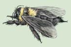

11 Los principios básicos de la herencia
237
CONCEPTOS CLAVE
11.1 Los experimentos de Gregor Mendel, pionero en el campo de la genética, revelaron los principios básicos de la herencia. En el principio de segregación de Mendel, los miembros de un par de genes se segregan (separan) entre sí antes de la formación del gameto. En el principio de transmisión o distribución independiente, los miembros de diferentes pares de genes varían en forma independiente (aleatoriamente) en los gametos. 11.2 Se puede emplear la probabilidad para predecir la herencia mendeliana: la regla del producto muestra cómo combinar las probabilidades de eventos independientes, y la regla de la suma indica cómo combinar las probabilidades de eventos mutuamente excluyentes. 11.3 El comportamiento de los cromosomas durante la meiosis ayuda a explicar los principios de Mendel de la herencia. 11.4 Los patrones distintivos de la herencia (es decir, “extensiones” a los principios de Mendel) caracterizan algunos rasgos.
L
os caracteres humanos como el color de los ojos y el color del cabello, junto con muchas otras características, se transfi eren de una generación a otra. La herencia , que es la transmisión de información genética de progenitores a su descendencia, generalmente sigue patrones predecibles en organismos tan diversos como humanos, pingüinos, levadura de panadería, y girasoles. La genética , la ciencia de la herencia, estudia similitudes genéticas y la variación genética , las diferencias entre progenitores y su descendencia o entre individuos de una población. El estudio de la herencia como una moderna rama de la ciencia empezó a mediados del siglo xix con el trabajo de Gregor Mendel (1822-1884), monje que cultivó plantas de guisantes (vea la pintura). Mendel fue el primer científi co en aplicar de manera efectiva métodos cuantitativos para estudiar la herencia. Él no sólo describió sus observaciones sino que planeó de manera cuidadosa sus experimentos, registró los datos, y analizó
Gregor Mendel. Esta pintura muestra a Mendel con sus plantas de guisantes en el jardín del monasterio en Brünn, Austria (ahora Brüno, República Checa).
© Science Source/Photo Researchers, Inc.
238 Capítulo 11
los resultados matemáticamente. Aunque durante su vida su trabajo no fue apreciado, éste fue redescubierto en 1900. Durante las décadas posteriores al redescubrimiento de los resultados de Mendel, los genetistas extendieron los principios de Mendel correlacionando la transmisión de información genética de generación en generación con el comportamiento de los cromosomas durante la meiosis . Al estudiar una variedad de organismos, los genetistas comprobaron los descubrimientos de Mendel y agregaron una creciente lista de las así llamadas excepciones a sus principios. Los genetistas no sólo estudian la transmisión de genes sino también la expresión de la información genética. Como se verá en este capítulo y en los siguientes, la comprensión de las relaciones entre los genes de un organismo y sus características se ha vuelto cada vez más compleja conforme los biólogos han aprendido más acerca de la transmisión ordenada de información en las células, de una generación a otra.
11.1 PRINCIPIOS DE MENDEL SOBRE LA HERENCIA
OBJETIVOS DE APRENDIZAJE
1 Defi nir los términos fenotipo, genotipo, locus, alelo, alelo dominante, alelo recesivo, homocigotos y heterocigotos. 2 Describir los principios de Mendel de segregación y de transmisión o distribución independiente. 3 Distinguir entre los cruzamientos monohíbrido, dihíbrido y de prueba. 4 Explicar los principios de Mendel de segregación y de transmisión independiente, con lo que actualmente los científi cos conocen acerca de genes y cromosomas.
Gregor Mendel no fue el primero en dedicarse al mejoramiento de plantas. En la época en que él inició su trabajo, hacía bastante tiempo
MÉTODO DE INVESTIGACIÓN
Normalmente, los guisantes de jardín se autofertilizan durante la reproducción, es decir, los gametos masculino y femenino están en la misma fl or. Los pétalos del guisante envuelven completamente las partes reproductivas, entonces existe poca posibilidad de una polinización cruzada natural entre fl ores separadas. La polinización cruzada le permite al investigador estudiar distintos patrones de herencia en los guisantes.
1 Los pétalos encierran las estructuras reproductivas de las flores.
2 Los pétalos abiertos revelan las estructuras reproductivas masculina y femenina.
6 Descendencia observada.
3 Anteras cortadas de la flor.
4 El polen de una flor diferente se coloca sobre la punta del carpelo.
5 El carpelo fertilizado produce semillas, que son plantadas.
Carpelo
Carpelo
Anteras
FIGURA 11-1 Cómo se hace polinización cruzada en los guisantes del jardín
¿Por qué se utiliza?
¿Cómo se hace esto?
Los principios básicos de la herencia 239
fuentes de polen porque los pétalos cubren completamente las estructuras reproductivas. Mendel obtuvo sus semillas de guisante originales de fuentes comerciales e hizo un importante trabajo preliminar antes de iniciar sus experimentos. Durante dos años verifi có que las variedades fueran líneas puras para distintas características heredadas. Actualmente, los científi cos utilizan el término fenotipo para referirse al aspecto físico de un organismo y genotipo para referirse a la composición genética de ese organismo, que es más frecuentemente expresado en símbolos. Una línea o variedad pura sólo produce descendencia que expresa el mismo fenotipo (por ejemplo, semillas redondas o plantas de tallo largo) de generación en generación. Aparentemente, durante este tiempo Mendel eligió aquellos rasgos de sus cepas de guisantes que pudieran estudiarse con facilidad. Quizás hizo las primeras observaciones que después formaron la base de sus hipótesis. Finalmente, Mendel seleccionó cepas que representaban siete caracteres , los atributos (como el color de la semilla) para los cuales las diferencias heredables, o rasgos , son conocidos (como semillas amarillas y semillas verdes). Los caracteres que eligió Mendel tuvieron fenotipos claramente contrastantes ( FIGURA 11-2 ). Los resultados de Mendel fueron sencillos de analizar porque tomó fenotipos fácilmente distinguibles y limitó la variación genética estudiada en cada experimento. Mendel empezó sus experimentos cruzando plantas de dos diferentes variedades puras con fenotipos contrastantes; estos individuos genéticamente puros constituyeron la generación parental , o generación P . En cada caso, todos los miembros de la primera generación de
que los criadores habían reconocido la existencia de plantas y animales híbridos , la descendencia de dos progenitores genéticamente distintos. Cuando Mendel empezó en 1856 sus experimentos de fi tomejoramiento, había dos importantes conceptos acerca de la herencia ampliamente aceptados: (1) Todas las plantas híbridas que son descendientes de progenitores genéticamente puros, o de una variedad pura , son similares en apariencia. (2) Cuando los híbridos se aparean entre sí, no resulta una raza o variedad pura; sus descendientes muestran una mezcla de rasgos. Algunos se parecen a sus progenitores, y otros tienen algunas características de sus abuelos. La genialidad de Mendel radica en su habilidad para reconocer un patrón en la forma en que los rasgos de los progenitores reaparecen en la descendencia de híbridos. Antes de Mendel, nadie había clasifi cado y contado la descendencia y analizado estos patrones regulares durante varias generaciones, hasta el punto en que él lo hizo. De la misma forma en que ahora lo hacen los genetistas, Mendel eligió cuidadosamente el organismo para sus experimentos. El guisante de jardín, Pisum sativum , tenía varias ventajas. Las plantas de guisante se cultivan con facilidad, y había muchas variedades disponibles comercialmente. Otra ventaja de las plantas de guisante es la relativa facilidad para implementar polinizaciones controladas. Las fl ores de guisante tienen partes femeninas y masculinas y se autopolinizan en forma natural. Sin embargo, las anteras (partes masculinas de la fl or que producen el polen) se pueden eliminar para evitar la autofertilización ( FIGURA 11-1 ). Se puede aplicar el polen de una fuente distinta al estigma (la superfi cie receptiva del carpelo, o parte femenina). Las fl ores de guisante son fáciles de proteger de otras
Color de la flor
Tallo Posición de la flor
Color de la semilla Color de la vaina Forma de la vaina
Forma de la semilla Púrpura
Blanca
Largo Corto Axial Terminal
Verde
Lisa Rugosa
Amarillo
Verde Amarilla Inflada Rugosa
FIGURA 11-2 Siete caracteres en el estudio de Mendel acerca de las plantas de guisante Cada carácter tenía dos fenotipos claramente distinguibles; el fenotipo dominante está en negrita.

descendientes eran muy semejantes y se parecían a uno de los dos progenitores. Por ejemplo, cuando cruzó plantas con tallo largo con plantas de tallo corto, todos los descendientes eran de tallo alto ( FIGURA 11-3 ). Esa descendencia fue la primera generación fi lial, o la generación F 1 ( fi lial en latín signifi ca “hijos e hijas”). La segunda generación fi lial, o generación F 2 , resultado del cruzamiento entre individuos F 1 o por autopolinización de individuos F 1 . En este experimento la generación F 2 de Mendel incluyó 787 plantas largas y 277 cortas. La TABLA 11-1 muestra los resultados experimentales de Mendel para todos los siete caracteres de los guisantes. En la época de Mendel, la mayoría de los criadores pensaron que la herencia implicaba la mezcla de rasgos. En la herencia mezclada , los gametos masculino y femenino supuestamente contenían fl uidos que se mezclaban entre sí durante la reproducción para producir descendientes híbridos con características intermedias de la madre y el padre. En efecto, algunos fi tomejoradores de plantas habían obtenido estos híbridos. Aunque Mendel observó algunos tipos intermedios de híbridos, decidió estudiar aún más los híbridos F 1 en los cuales los “factores hereditarios” (como él los llamó) de uno de los progenitores aparentemente enmascaran la expresión de los factores del otro progenitor. Otros criadores también habían observado esos tipos de híbridos, pero no los habían explicado. Utilizando términos modernos, se dice que el factor expresado en la generación F 1 (altas, en nuestro ejemplo) es dominante ; el gen escondido en F 1 (bajas) es recesivo . Los rasgos dominantes enmascaran a los recesivos cuando ambos están presentes en el mismo individuo. Aunque ahora los científi cos saben que la dominancia no se observa siempre, el hecho de que pueda ocurrir no fue consistente con el concepto de la herencia mezclada. Los resultados de Mendel fueron inconsistentes con la hipótesis de herencia mezclada en una forma más convincente. Una vez que se han mezclado dos fl uidos, es muy difícil imaginar cómo se puedan separar. Sin embargo, en el ejemplo anterior, en la generación F 1 el factor hereditario (o quizás los factores) que controló la altura de la planta no se perdió o mezcló inseparablemente con el factor hereditario que controló la mayor altura de la planta porque en la generación F 2 reaparecieron plantas cortas. Mendel estuvo muy tranquilo con el lado teórico de la biología porque él también fue un estudiante de física y matemáticas. Por lo tanto, propuso que cada tipo de característica heredada de un organismo es controlado por dos factores que se comportan de manera semejante a partículas discretas y que están presentes en cada individuo. Para Mendel esos factores hereditarios eran abstracciones, no sabía de cromosomas y ADN. Esos factores son esencialmente lo que hoy los científi cos llaman genes , unidades de herencia que afectan los rasgos de un organismo. A nivel molecular, un gen es una secuencia de ADN que contiene información para elaborar un ARN o un producto proteínico
EXPERIMENTO CLAVE
PREGUNTA: Cuando la generación F 1 de plantas de tallo largo de guisante se autopoliniza, ¿qué fenotipos se presentan en la generación F 2 ?
HIPÓTESIS: Aunque sólo el “factor” (gen) para tallo largo se expresa en la generación F 1 , Mendel supuso que el factor para tallo corto no se perdía. Predijo que el fenotipo corto reaparecería en la generación F 2 .
EXPERIMENTO: Mendel cruzó plantas de guisante de tallo largo de una variedad pura con plantas de guisante de tallo corto de variedad pura, produciendo sólo descendencia de tallo alto en la generación F 1 . Luego permitió que estos individuos F 1 se autopolinizaran para producir la generación F 2 .
Generación P
F 1
F 2
T t
Planta de tallo largo (alta) Planta de tallo corto (baja)
t t T T
X
Planta alta Planta alta Planta alta
T T T t T t
Planta (baja)
t t
Todas las plantas altas
3 largas: 1 corta
Generación
Generación
RESULTADOS Y CONCLUSIÓN: La generación F 2 incluía 787 plantas de tallo largo y 277 plantas de tallo corto, lo que resulta en una proporción 3:1. Así, los rasgos mendelianos se transmiten a generaciones sucesivas en proporciones fi jas.
FIGURA 11-3 Animada Uno de los cruzamientos de Mendel con guisantes
Resultados experimentales de Mendel de siete caracteres
Características y rasgos en guisantes Generación F 2
Rasgo Rasgo Dominante: Característica dominante × recesivo recesivo Proporción
Longitud del tallo Largo × Corto 787:277 2.84:1
Color de fl or Púrpura × Blanca 705:224 3.15:1
Posición de la fl or Axial × Terminal 651:207 3.14:1
Color de vaina Verde × Amarillo 428:152 2.82:1
Forma de vaina Infl ada × Rugosa 882:299 2.95:1
Color de semilla Amarilla × Verde 6022:2001 3.01:1
Forma de semilla Lisa × Rugosa 5474:1850 2.96:1
TABLA 11-1
Los principios básicos de la herencia 241
así, los alelos recesivos no se pierden y pueden reaparecer en la generación F 2 . En nuestro ejemplo, antes de que las plantas F 1 formaran gametos, el alelo para plantas de tallo largo se segregó del alelo para plantas de tallo corto; así la mitad de los gametos tuvieron un alelo T , y la otra mitad, un alelo t ( FIGURA 11-4 ). El proceso aleatorio de fertilización condujo a tres posibles combinaciones de alelos en la descendencia F 2 : un cuarto con dos alelos de tallo largo ( TT ), un cuarto con dos alelos de tallo corto ( tt ), una mitad con un alelo de tallo largo y uno de tallo bajo ( Tt ). Ya que ambas plantas TT y Tt son de tallo largo, entonces Mendel esperaba que aproximadamente tres cuartos (787 de las 1064 plantas que obtuvo) expresaran el fenotipo del alelo dominante (planta de tallo largo) y cerca de un cuarto (277/1064) manifestaran el fenotipo del alelo recesivo (planta de tallo corto). Posteriormente, en este capítulo se explicará el razonamiento matemático de estas predicciones.
con una función específi ca. (El capítulo 13 traza el desarrollo de ideas respecto a la naturaleza de los genes). Los experimentos de Mendel lo condujeron al descubrimiento y explicación de los principios de la herencia, que ahora se distinguen como los principios de segregación y de transmisión o distribución independiente (vea la TABLA 11-2 para un resumen del modelo de Mendel de la herencia). Ahora se analizará el primer principio, y el segundo se estudiará más adelante en este capítulo.
Los alelos se separan antes de que se formen los gametos: principio de segregación
Las formas alternativas de un gen se llaman alelos . En el ejemplo de la fi gura 11-3, cada generación F 1 de plantas de tallo largo tuvieron dos diferentes alelos que controlan la altura de la planta: un alelo dominante para largas (designado por T ) y un alelo recesivo para cortas (denotado por t ). Ya que el alelo largo fue dominante, entonces esas plantas fueron largas. Para explicar sus resultados experimentales, Mendel propuso una idea ahora conocida como el principio de segregación . Utilizando terminología moderna, el principio de segregación establece que antes de que ocurra la reproducción sexual, los dos alelos portados por un progenitor individual deben separarse (es decir, segregarse). Recuerde que durante la meiosis, los cromosomas homólogos, y por lo tanto los alelos que residen en ellos, se separan. (La meiosis puede repasarse en la fi gura 10-16). Como resultado, cada célula sexual (óvulo o espermatozoide) formada sólo contiene un alelo de cada par. (Posteriormente, en la época de fertilización, cada gameto haploide contribuye con un cromosoma de cada par de homólogos y por lo tanto con un alelo para cada par genético). Una característica esencial de la meiosis es que los alelos permanecen intactos (uno no se mezcla con o elimina al otro);
Modelo de Mendel de la herencia
- Formas alternativas de un “factor” (que ahora se llama un gen ) para tomar en cuenta las variaciones de los rasgos heredados.
Aunque Mendel sólo observó dos formas (que ahora se llaman alelos ) para cada factor que estudió, actualmente se sabe que muchos genes tienen más de dos alelos.
- Los rasgos heredados pasan de los progenitores a su descendencia como factores sin modifi cación.
Mendel no observó la descendencia de aspecto intermedio, como lo hubiera predicho la hipótesis de herencia mezclada. Ahora se conocen excepciones a este concepto.
- Cada individuo tiene dos conjuntos de factores, uno de cada par heredado, proviene de la madre y otro del padre.
No importa qué progenitor contribuye con cuál conjunto de factores.
- Los factores apareados se separan durante la formación de las células reproductivas (principio de segregación).
Debido a la meiosis , descubierta después de la época de Mendel, cada progenitor transfi ere un conjunto de factores a cada descendiente.
- Los factores se pueden expresar o esconder en una generación dada, pero nunca se pierden.
Por ejemplo, los factores no expresados en la generación F 1 reaparecen en algunos individuos F 2 .
- Cada factor se pasa a la siguiente generación independientemente de todos los otros factores (principio de transmisión independiente).
Desde el tiempo de Mendel, la investigación ha revelado que existen excepciones a este principio.
TABLA 11-2
El principio de segregación de Mendel está relacionado a los eventos de meiosis: la separación de los cromosomas homólogos durante la meiosis da como resultado la segregación de los alelos.
METAFASE I
METAFASE II
T T t t
T T t t
T T t t
Gametos portadores del factor T Gametos portadores del factor t
Cromosomas homólogos
FIGURA 11-4 Animada Cromosomas y segregación Observe que una mitad de los gametos portan el factor T y la otra mitad porta el factor t .
PUNTO CLAVE
242 Capítulo 11
amarillos versus guisantes verdes), están disponibles para estudio. En los casos más simples, un individuo puede expresar uno (amarillo) o el otro (verde) pero no ambos. Los alelos son, por lo tanto, genes que controlan variaciones del mismo carácter (color de la semilla amarillo versus verde) y que ocupan ubicaciones correspondientes en los cromosomas homólogos. Los genetistas asignan a cada alelo de un sitio una sola letra o grupo de letras como su símbolo. 1
Aunque con frecuencia los genetistas utilizan más complicadas formas de notación, cuando se trabaja con problemas genéticos simples es costumbre indicar un alelo dominante con una letra mayúscula y un alelo recesivo con la misma letra pero en minúscula. Recuerde que el término locus no sólo designa una posición en un cromosoma sino también un tipo de gen que controla un carácter particu lar; así, Y (amarillo) y y (verde) representan un par específi co de alelos de un locus implicado en la determinación del color de la semilla de guisante. Aunque inicialmente se pueda estar inconforme con que los genetistas algunas veces utilicen el término gen para especifi car un locus y en otras ocasiones para especifi car uno de los alelos de ese locus, normalmente el signifi cado es claro dependiendo del contexto.
Un cruzamiento mon ohíbrido implica individuos con diferentes alelos de un locus dado
Los principios básicos de la genética y el uso de términos genéticos se ilustran mejor con ejemplos. En el caso más simple, un cruzamiento monohíbrido , estudia la herencia de dos distintos alelos de un único locus. La FIGURA 11-6 ilustra un cruzamiento monohíbrido caracterizando
Los alelos ocupan lugares correspondientes en los cromosomas homólogos
Actualmente los científi cos saben que cada cromosoma no duplicado consiste en una larga, molécula de ADN lineal y que cada gen es realmente un segmento de esa molécula de ADN. También, se sabe que los cromosomas homólogos no sólo son similares en tamaño y forma, sino que también por lo común tienen los mismos genes (frecuentemente con distintos alelos) localizados en lugares que se corresponden. Originalmente, el término locus (lugar; loci , lugares, en plural) designó la ubicación de un gen particular en el cromosoma ( FIGURA 11-5 ). Pero en realidad se está refi riendo a un segmento del ADN que tiene la información para controlar algún aspecto de la estructura o función del organismo. Un locus genético puede controlar el color de la semilla, otro la forma de la semilla, otro la forma de las vainas, y así sucesivamente. Los métodos genéticos tradicionales pueden inferir la existencia de un locus genético particular sólo si al menos dos variantes alélicas de ese locus, que producen fenotipos contrastantes (por ejemplo, guisantes
1 Los primeros genetistas inventaron sus propios símbolos para representar genes y alelos. Posteriormente, se reunieron diversos grupos de científi cos para decidir sobre símbolos específi cos para un organismo modelo de investigación dado, como la mosca de la fruta, pero cada grupo de investigación tuvo sus propias reglas para asignar símbolos. Aún no existen reglas universalmente aceptadas para asignar símbolos para genes y alelos.
Un gameto tiene un conjunto de cromosomas, el número n . Tiene un cromosoma de cada par homólogo. Un gameto dado sólo puede tener un gen de cualquier par particular de alelos.
Cuando los gametos se fusionan, el cigoto resultante es diploide (2 n ) y tiene pares homólogos de cromosomas. Para fines de ilustración, estos se muestran físicamente apareados.
Localizaciones (loci) de los genes
Par de alelos
Estos genes no son alélicos entre sí
Alelos que controlan el color del cabello: Negro Café
Alelos que controlan la longitud del cabello: Largo Corto
Un miembro de cada par de cromosomas homólogos es de origen materno ( rojo ), y el otro es de origen paterno ( azul ).
Estos cromosomas no son homólogos. Cada cromosoma está hecho de cientos o miles de genes. Un locus es el lugar específico en un cromosoma en donde un gen está localizado.
Estos cromosomas son homólogos. Los alelos son miembros de un par de genes que ocupan correspondientes ubicaciones en los cromosomas homólogos.
Los alelos controlan el mismo carácter pero no necesariamente contienen la misma información.
FIGURA 11-5 Animada Localizaciones de genes y sus alelos
Los principios básicos de la herencia 243
ces cada espermatozoide sólo tiene un alelo b . La fertilización de cada óvulo B mediante un espermatozoide b da como resultado descendientes F 1 heterocigotos, cada uno Bb ; es decir, cada individuo sólo tiene un alelo de pelaje café y uno para pelaje negro. Ya que esta es la única posible combinación de alelos presentes en los óvulos y espermatozoides, entonces todos los descendientes F 1 son Bb . También, observe que no hay diferencia si la descendencia recibe el alelo dominante de la madre o del padre conejillo de indias.
El cuadrado de Punnett predice las proporciones de las diversas descendencias de un cruzamiento
Durante la meiosis en conejillos de indias negros heterocigotos ( Bb ), el cromosoma que contiene al alelo B se separa de su homólogo (el cromosoma con el alelo b ), así cada espermatozoide u óvulo normal contiene B o b pero nunca ambos. Los individuos Bb heterocigotos forman gametos con alelos B y gametos con alelos b en cantidades iguales. Como no ocurre atracción o repulsión especial entre un óvulo y un espermatozoide que contiene el mismo alelo, entonces la fertilización es un proceso aleatorio. Como puede ver en la fi gura 11-6 las posibles combinaciones de óvulos y espermatozoides en la fertilización, que se pueden representar en la forma de una rejilla, o cuadrado de Punnett , ideado por el genetista inglés sir Reginald Punnett . Los tipos de gametos (y sus esperadas frecuencias) de un progenitor se listan en la parte superior, y los del otro progenitor se listan en el lado izquierdo. Entonces los cuadros se llenan con las combinaciones F 2 resultantes. Tres cuartos de todos los descendientes F 2 tienen la constitución genética BB o Bb y son fenotípicamente negros; un cuarto tiene la constitución genética bb y son fenotípicamente cafés. Otra vez es evidente el mecanismo genético que gobierna las proporciones aproximadas F 2 3:1 obtenidas por Mendel en sus experimentos de cultivo de guisantes. Esas razones se conocen como razones fenotípicas F 2 monohíbridas.
El fenotipo de un individuo no siempre revela su genotipo
Como ya se mencionó, un fenotipo de un organismo es su apariencia con respecto a un cierto rasgo heredado. Sin embargo, ya que algunos alelos pueden ser dominantes y otros recesivos, entonces no siempre se puede determinar, simplemente examinando su fenotipo, qué alelos son portados por un organismo. En el cruzamiento que se ha estado considerando, el genotipo del progenitor hembra es dominante homocigoto, BB , y su fenotipo es negro. El genotipo del progenitor macho es homocigoto recesivo, bb , y su fenotipo es café. El genotipo de todos los descendientes F 1 es heterocigoto, Bb , y su fenotipo es negro. Para evitar confusión, siempre se indica el genotipo de un individuo heterocigoto escribiendo primero el símbolo para el alelo dominante y después el asociado con el alelo recesivo (siempre Bb , nunca bB ). La expresión de la dominancia explica parcialmente por qué un individuo se puede parecer más a un progenitor que al otro, aunque ambos progenitores contribuyan de manera equitativa a la constitución genética de su descendencia. La dominancia no es predecible, es decir, la dominancia no es una parte intrínseca de un alelo sino que es la propiedad de un alelo respecto de otros alelos. La dominancia se produce por el mecanismo de expresión genética y sólo se puede determinar mediante el experimento. En una especie de animal, el pelaje negro puede ser dominante sobre el café; en otra especie, el café puede ser dominante sobre el negro. En una población, el fenotipo dominante no necesariamente es más común que el fenotipo recesivo.
un locus que controla el color del pelaje en conejillos de indias. La hembra pertenece a una línea pura de conejillos de indias negros. Se dice que es homocigota para el negro porque los dos alelos que porta para este locus son idénticos. El macho café también es de una línea pura y es homocigoto para el café. ¿Qué color se esperaría que fuera la generación F 1 ? Realmente, es imposible hacer tal predicción sin mayor información. En este caso particular, los descendientes de F 1 son negros, pero son heterocigotos , lo que signifi ca que tienen dos distintos alelos para este locus. El alelo café sólo determina el color del pelaje en un individuo homocigoto café; es un alelo recesivo. El alelo negro tiene infl uencia en el color del pelaje en individuos homocigotos negros y heterocigotos; es un alelo dominante. Con base en esta información, se pueden emplear símbolos para designar al alelo dominante negro B y al alelo recesivo café b . Durante la meiosis en la madre ( BB ), los dos alelos B se separan de acuerdo con el principio de segregación de Mendel, así que cada óvulo sólo tiene un alelo B . En el macho ( bb ) los dos alelos b se separan, enton-
Macho café ( bb ) Hembra negra ( BB )
Dominante B enmascara al recesivo b
BB Bb
bb Bb
b
B
b B
B b
1 4
1 4 1 4 1 2
1 2 1 2
1 2
1 4
Generación P
Generación F 1
Generación F 2
Gametos
Todos Bb
Gametos de la hembra F 1
Gametos del macho F 1
FIGURA 11-6 Animada Cruzamiento monohíbrido en conejillos de indias En este ejemplo, un conejillo de indias negro homocigoto se cruza con un conejillo de indias café homocigoto. La generación F 1 sólo tiene individuos negros. Sin embargo, el cruzamiento de dos de esos descendientes F 1 produce una generación F 2 de descendientes en la razón esperada de 3 negros a 1 café, que indica que los individuos F 1 son heterocigotos.
244 Capítulo 11
los descendientes fueran negros, ¿qué inferencia podría hacerse respecto al genotipo del progenitor negro? Si cualesquiera de los descendientes fuera café, ¿qué conclusión podría aportarse con relación al genotipo del progenitor negro? ¿Cuál de las dos inferencias es más factible? 2
Cruzamiento de prueba puede detectar heterocigocidad
Los conejillos de indias con los genotipos BB y Bb son semejantes fenotípicamente; ambos tienen pelaje negro. Entonces, ¿cómo se conoce el genotipo de un conejillo de indias negro? Los genetistas logran esto efectuando un cruzamiento experimental conocido como cruzamiento de prueba , en el cual un individuo de genotipo desconocido se cruza con un individuo recesivo ( FIGURA 11-7 ). En un cruzamiento de prueba, los alelos que portan los gametos del progenitor de genotipo desconocido nunca están “escondidos” en la descendencia por alelos dominantes dados por el otro progenitor. Por lo tanto, se pueden deducir los genotipos de todos los descendientes directamente de sus fenotipos. Si todos
2 Si cualquiera de los descendientes fuera café, entonces el progenitor negro debe ser heterocigoto, Bb . Si todos los descendientes fueran negros, se podría inferir que el progenitor negro es probablemente homocigoto, BB . (Por ejemplo, los estadísticos calculan que si el progenitor negro es heterocigoto, la probabilidad de cuatro descendientes negros, y no cafés, es solamente 1 — 16 ).
EXPERIMENTO CLAVE
PREGUNTA: ¿Cómo se determina el genotipo de un individuo con un fenotipo dominante?
HIPÓTESIS: Un cruzamiento de prueba entre un individuo con un fenotipo dominante pero genotipo desconocido y un individuo que es homocigoto recesivo para el gen en cuestión, produce descendencia que proporciona información sobre el genotipo del individuo dominante.
EXPERIMENTO: Cruzamiento de un conejillo de indias negro de genotipo desconocido con un conejillo de indias café, que es un homocigoto recesivo.
b B
Si es heterocigoto Negro ( Bb ) Homocigoto café ( bb ) Homocigoto café ( bb )
B b
Todos Bb
Gametos Gametos
Todos los descendientes son negros y heterocigotos
Óvulos
Espermatozoide
b
B
1 2
1 2
1 2
1 2
Heterocigoto negro Bb
Homocigoto café bb
b
b
Si es homocigoto Negro ( BB ) ¿ ¿
Si un conejillo de indias negro se aparea con un conejillo de indias café y todos los descendientes son negros, entonces probablemente el progenitor negro tiene un genotipo homocigoto.
Si cualesquiera de los descendientes es café, el conejillo de indias negro debe ser heterocigoto. La proporción fenotípica esperada es 1 negro a 1 café.
RESULTADOS Y CONCLUSIÓN: Hay dos posibles resultados. Si todos los descendientes son negros, entonces probablemente el progenitor negro tiene un genotipo homocigoto. Si cualquiera de los descendientes es café, el progenitor negro debe ser heterocigoto. La proporción esperada es 1 negro: 1 café.
FIGURA 11-7 Animada Cruzamiento de prueba en conejillos de indias
Los principios básicos de la herencia 245
tizar que cada gameto contenga un alelo para cada locus, pero los alelos de diferentes loci se transmiten aleatoriamente con respecto a los demás gametos. La transmisión independiente de esos alelos puede
Mendel realizó varios cruzamientos de prueba; por ejemplo, cultivó plantas de guisante F 1 (de tallo largo) con guisantes con homocigoto recesivo ( tt ) de tallo corto. Razonó que los individuos F 1 eran heterocigotos ( Tt ) por lo que se esperaría que produjeran el mismo número de gametos T y t . Ya que se esperaba que los progenitores de tallo corto homocigotos ( tt ) sólo produjeran gametos t , Mendel supuso que obtendría igual número de descendientes de tallo largo ( Tt ) y de tallo corto( tt ). Sus resultados concordaron con su hipótesis, aportando evidencia adicional para la hipótesis de que existe segregación 1:1 de los alelos de un progenitor heterocigoto. Así, el principio de segregación de Mendel no sólo explicó los hechos conocidos, como la proporción fenotípica F 2 monohíbrida 3:1, sino que también le permitió anticipar exitosamente los resultados de otros experimentos, en este caso, la proporción fenotípica de cruzamiento de prueba 1:1.
Cruzamiento dihíbrido implica a individuos que tienen diferentes alelos en dos loci
Los cruzamientos monohíbridos implican un par de alelos de un único locus. Mendel también analizó cruzamientos que implican alelos de dos o más loci. Un apareamiento entre individuos con distintos alelos en dos loci se llama cruzamiento dihíbrido . Considere el caso de dos pares de alelos portados en cromosomas no homólogos (es decir, un par de alelos está en un par de cromosomas homólogos, y el otro par de alelos está en un par diferente de cromosomas homólogos). Cada par de alelos se hereda en forma independiente; o sea, durante la meiosis cada par se segrega independientemente del otro. En la FIGURA 11-8 se muestra un ejemplo de un cruzamiento dihíbrido portado a través de la generación F 2 . En este ejemplo, el negro es dominante sobre el café, y el pelo corto domina al pelo largo. Cuando un conejillo de indias homocigoto, negro, de pelaje corto ( BBSS ) y un conejillo de indias homocigoto, café, de pelo largo ( bbss ) se aparean, todos los gametos producidos por el animal BBSS son BS , y la totalidad de gametos producidos por el individuo bbss son bs . Cada gameto contiene un alelo para cada uno de los dos loci. La unión de los gametos BS y bs sólo producen individuos con el genotipo BbSs . Todos esos descendientes F 1 son heterocigotos en cuanto al color y longitud del pelo, y todos son fenotípicamente negros y de pelaje corto. Cada conejillo de indias F 1 produce cuatro tipos de gametos con igual probabilidad: BS , Bs , bS y bs . Así que, el cuadrado de Punnett tiene 16 (es decir, 4 2 ) cuadros que representan a la descendencia F 2 , algunos de los cuales son semejantes genotípicamente o fenotípicamente. Existen 9 posibilidades en 16 de obtener un individuo negro de pelo corto; 3 opciones de 16 de obtener un individuo negro de pelaje largo; 3 oportunidades de 16 de lograr un individuo café de pelo corto; y 1 opción de 16 de obtener un individuo café de pelaje largo. Esta razón fenotípica 9:3:3:1 es de esperarse en un dihíbrido F 2 si los loci de color del pelo y de longitud del pelaje están sobre cromosomas no homólogos.
Los alelos sobre cromosomas no homólogos están aleatoriamente distribuidos en los gametos: el principio de transmisión independiente
Sobre la base de resultados similares al ejemplo de los conejillos de indias, Mendel formuló el principio de la herencia, ahora conocido como el principio de transmisión o distribución independiente de Mendel, que establece que los miembros de cualquier par de genes se segregan entre sí independientemente de los miembros de los otros pares de genes. Este mecanismo ocurre de manera regular para garan-
Generación P
Generación F 1
Fenotipos F 2
bs
BS Bs bs bS
BS
Bs
BS
bS
bs
BBSS BbSS BbSs BBSs
BBSs BbSs Bbss BBss
BbSS bbSS bbSs BbSs
BbSs bbSs bbss Bbss
Negro corto Negro corto Negro corto Negro corto
Negro corto Negro corto Negro largo Negro largo
Negro corto Café corto Café corto Negro corto
Negro corto Café corto Café largo Negro largo 1 4
1 4
1 4
1 4
1 4 1 4 1 4 1 4
Gametos formados por segregación y transmisión independientes de alelos,
Todos BbSs
Gametos
BBSS bbss
Negro, pelo corto Café, pelo largo
Negro, pelo corto Negro, pelo largo Café, pelo corto Café, pelo largo
9 16 3 16 3 16 1 16
Generación F 2
Gametos de macho F 1
Gametos de hembra F 1
FIGURA 11-8 Animada Cruzamiento dihíbrido en conejillos de indias Cuando un conejillo de indias negro de pelo corto se cruza con uno café de pelo largo, todos los descendientes son negros y tienen pelaje corto. Sin embargo, cuando se cruzan dos miembros de la generación F 1 , la razón de fenotipos es 9:3:3:1.
246 Capítulo 11
El reconocimiento del trabajo de Mendel se dio a principios del siglo xx
Mendel reportó sus descubrimientos en un Congreso de la Sociedad Brünn para el Estudio de la Ciencia Natural (en lo que ahora es la República Checa); en 1866 publicó sus resultados en las Memorias de la Sociedad. En ese tiempo la biología era una ciencia en gran parte descriptiva, y los biólogos tenían poco interés en aplicar métodos cuantitativos y experimentales como los que Mendel había utilizado. Otros biólogos de la época no apreciaron la importancia de sus resultados ni sus interpretaciones de dichos resultados. Durante 34 años sus descubrimientos fueron largamente ignorados. En 1900, Hugo DeVries en Holanda, Carl Correns en Alemania, y Erich von Tschermak en Austria reconocieron los principios de Mendel
dar por resultado una recombinación genética (o simplemente recombinación ), el proceso de transmitir y transferir alelos a los descendientes en nuevas combinaciones que son diferentes de aquellos en los progenitores. Actualmente se acepta que la transmisión independiente está relacionada con los eventos de la meiosis, que ocurre porque dos pares de cromosomas homólogos se pueden arreglar en dos formas distintas en la metafase I de la meiosis ( FIGURA 11-9 ). Esos arreglos suceden aleatoriamente, y cerca de la mitad de las células meióticas están orientadas de una manera y la mitad restante lo hace en la forma opuesta. Entonces, la orientación de los cromosomas homólogos sobre la placa metafásica determina la manera en que fi nalmente se separan y dispersan en las células haploides. (Sin embargo, como pronto verá, no siempre ocurre la transmisión independiente).
Principio de transmisión independiente de Mendel, el hecho de que los factores para diferentes características se separen independientemente entre sí antes de la formación de los gametos, es una consecuencia directa de los eventos de la meiosis.
METAFASE I
METAFASE II
b
bs
s s S S
b b B B
s
s
b s
B S
B S
s
b b
s s S S
b b B B
S S
B B
b b
B B
S S s s
BS
b
bS
S
b S
B s
B s
Bs
FIGURA 11-9 Animada Meiosis y transmisión independiente
Dos diferentes pares de cromosomas homólogos se pueden alinear de dos distintas maneras en la metafase I y ser subsecuentemente distribuidos. Una célula con la orientación que se muestra, a la izquierda, produce gametos mitad BS y mitad bs . Inversamente, la
célula a la derecha elabora gametos mitad Bs y mitad bS . Debido a que aproximadamente la mitad de las células meióticas en la metafase I son de cada tipo, la razón de los cuatro posibles tipos de gametos es 1:1:1:1.
PUNTO CLAVE
Los principios básicos de la herencia 247
probabilidad es 1; si hay seguridad de que no ocurra, su probabilidad es 0. Una probabilidad puede ser 0, 1, o algún número entre 0 y 1. El cuadrado de Punnett permite combinar dos o más probabilidades. Cuando se utiliza el cuadrado de Punnett , se están siguiendo dos importantes principios estadísticos conocidos como la regla del producto y la regla de la suma. La regla del producto predice las probabilidades combinadas de eventos independientes. Los eventos son independientes si la ocurrencia de uno no afecta a la probabilidad de que suceda el otro. Por ejemplo, la probabilidad de obtener cara en el primer lanzamiento de una moneda es 1 – 2 ; la probabilidad de obtener cara en el segundo lanzamiento (un evento independiente) también es 1 – 2 . Si dos o más eventos son independientes entre sí, entonces la probabilidad de que ambos sucedan es el producto de sus probabilidades individuales. Si esto parece extraño, considere que cuando se multiplican dos números que son menores que 1, el producto es un número menor. Por lo tanto, la probabilidad de obtener cara dos veces es 1 – 2 × 1 – 2 = 1 – 4 , o 1 oportunidad en 4 ( FIGURA 11-10 ). Similarmente, se puede aplicar la regla del producto a eventos genéticos. Si ambos progenitores son Bb , ¿cuál es la probabilidad de que produzcan un hijo(a) que sea bb ? Para que el hijo sea bb , él o ella deben recibir un gameto b de cada progenitor. La probabilidad de un óvulo b es 1 – 2 , y la probabilidad de un espermatozoide b también es 1 – 2 . Igual que con los resultados de los lanzamientos de la moneda, esas probabilidades son independientes, así que se combinan mediante la regla del producto ( 1 – 2 × 1 – 2 = 1 – 4 ). Este resultado se podría comprobar usando el cuadrado de Punnett . La regla de la suma predice las probabilidades combinadas de eventos mutuamente excluyentes . En algunos casos, existe más de una manera de obtener un resultado específi co. Esas distintas maneras son mutuamente excluyentes; si una ocurre, entonces la(s) otra(s) no puede(n) suceder. Por ejemplo, si ambos progenitores son Bb , ¿cuál es la probabilidad de que su primer hijo también tenga el genotipo Bb ? Hay dos formas diferentes de que esos progenitores puedan tener un hijo Bb : ya sea que
en sus propios experimentos; posteriormente descubrieron la publicación de Mendel y vieron que en ésta radicaba la explicación de sus propias observaciones experimentales. En ese tiempo los biólogos tuvieron mayor apreciación del valor de los métodos experimentales cuantitativos. Correns dio crédito a Mendel al dar su nombre a las leyes básicas de la herencia. Aunque los gametos y la fertilización se conocían en la época en que Mendel realizó su investigación, aún no se descubrían la mitosis ni la meiosis. Es muy notable que Mendel haya formulado sus ideas apoyándose principalmente en abstracciones matemáticas. En la actualidad, sus principios son mucho más fáciles de entender al relacionar la transmisión de genes con el comportamiento de los cromosomas. Los detalles de la mitosis y de la meiosis fueron descritos a fi nales del siglo xix, y en 1902, el biólogo estadounidense Walter Sutt on y el biólogo alemán Th eodor Boveri indicaron, de manera independiente, la conexión entre la segregación de alelos de Mendel y la separación de los cromosomas homólogos durante la meiosis. Esta conexión evolucionó hasta convertirse en la teoría cromosómica de la herencia , o teoría Sutt on Boveri , que establece que la herencia se puede explicar asumiendo que los genes están organizados linealmente en ubicaciones específi cas a lo largo de los cromosomas. Inicialmente la teoría cromosómica de la herencia fue controversial, debido a que en esa época no había evidencia directa de que los genes se encuentran en los cromosomas. Sin embargo, nuevas investigaciones aportaron los resultados necesarios para una más amplia aceptación y extensión de esas ideas y de sus implicaciones. Por ejemplo, en 1910 el trabajo del genetista estadounidense Th omas Hunt Morgan dio evidencia para la localización de un gen particular (color del blanco del ojo) sobre un cromosoma específi co (el cromosoma X) en moscas de la fruta. Morgan y sus estudiantes graduados también aportaron información sobre la manera en que los genes están organizados en los cromosomas; en este capítulo se estudiarán algunas contribuciones científi cas de Morgan.
Repaso
■ ¿Cuáles son las relaciones entre los loci, genes y alelos?
■ ¿Qué es el principio de segregación de Mendel?
■ ¿Cuál es el principio de transmisión independiente de Mendel?
11.2 USO DE PROBABILIDAD PARA PREDECIR LA HERENCIA MENDELIANA
OBJETIVO DE APRENDIZAJE
5 Aplicar apropiadamente las reglas del producto y de la suma para predecir los resultados de los cruzamientos genéticos.
Todas las proporciones genéticas se expresan apropiadamente en términos de probabilidades. En cruzamientos monohíbridos, la razón esperada de los fenotipos dominantes a los recesivos es 3:1. La probabilidad de un evento es su frecuencia esperada. Por lo tanto, se puede decir que hay 3 oportunidades en 4 (o 3 – 4 ) de que cualquier individuo particular descendiente de dos individuos heterocigotos expresará el fenotipo dominante y 1 posibilidad en 4 (o 1 – 4 ) de que expresará el fenotipo recesivo. No obstante de que algunas veces hablamos en términos de porcentajes, las probabilidades se calculan como fracciones (como 3 – 4 ) o fracciones decimales (como 0.75). Si existe la certeza de ocurrencia de un evento, entonces su
Segundo lanzamiento
Primer lanzamiento
= = ✕ 1 1 1 ✕ 1 1 1
✕ 1 1 1 = ✕ 1 1 1 =
1
1
1
1
2 2
2 2 2 2 2 4 4
2 2 2 2 2 4 4
Probabilidad es Probabilidad es
Probabilidad es
Probabilidad es
FIGURA 11-10 Las reglas de la probabilidad En cada lanzamiento de la moneda, la probabilidad de cara es 1 – 2 , y la probabilidad de cruz también es 1 – 2 . Debido a que el resultado del primer lanzamiento es independiente del resultado del segundo, las probabilidades combinadas de los resultados de sucesivos lanzamientos se calculan multiplicando sus probabilidades individuales (de acuerdo con la regla del producto: 1 – 2 × 1 – 2 = 1 – 4 ). Esas mismas reglas de probabilidad predicen eventos genéticos.
248 Capítulo 11
cigoto recesivo, bb , así esa probabilidad es sólo de 1 – 4 . Similarmente, la probabilidad de un hijo homocigoto dominante, BB , es 1 – 4 ).
Las reglas de la probabilidad se pueden aplicar a diferentes cálculos
Las reglas de la probabilidad tienen amplias aplicaciones. Por ejemplo, ¿cuáles son las probabilidades de que una familia con dos (y sólo
un óvulo B se combine con un espermatozoide b (probabilidad 1 – 4 ), o que un óvulo b se combine con un espermatozoide B (probabilidad 1 – 4 ). Naturalmente, si existe más de una manera de obtener un resultado, entonces aumentan las posibilidades de ser obtenido; por lo tanto, se combinan las probabilidades de eventos mutuamente excluyentes sumando sus probabilidades individuales. En nuestro ejemplo, entonces la probabilidad de obtener un hijo Bb es 1 – 4 + 1 – 4 = 1 – 2 . (Sólo hay una manera de que esos progenitores heterocigotos puedan producir un hijo homo-
¿Cómo resolver sencillos problemas genéticos mendelianos? Estos problemas pueden ser divertidos y fáciles de trabajar si se siguen ciertas convenciones de manera metódica.
Siempre utilice las designaciones estándar para las generaciones. La generación en la que se inicia un experimento genético particular se llama generación P o generación parental. La descendencia de esta generación es la generación F 1 o la primera generación fi lial. Los descendientes que resultan cuando dos individuos F 1 procrean constituyen la generación F 2 o la segunda generación fi lial.
Escriba una clave para los símbolos que utilice para las variantes alélicas de cada locus. Utilice una letra mayúscula para designar a un alelo dominante y una letra minúscula para denotar a un alelo recesivo. Aplique la misma letra del alfabeto para designar ambos alelos de un locus particular. Si no conoce qué alelo es dominante y cuál es recesivo, entonces el fenotipo de la generación F 1 es una buena clave.
Determine los genotipos de los progenitores en cada cruzamiento mediante el uso de los siguientes tipos de evidencia: • ¿Son líneas o variedades puras? Si así es, entonces deberían ser homocigotos. • ¿Sus genotipos pueden ser confiablemente deducidos a partir de sus fenotipos? Usualmente esto es cierto si expresan el fenotipo recesivo. • ¿Los fenotipos de sus descendientes proporcionan alguna información? En breve se analiza exactamente cómo se hace esto.
Indique los posibles tipos de gametos formados por cada uno de los progenitores. Es útil dibujar un círculo alrededor de los símbolos para cada tipo de gameto. • Si es un cruzamiento monohíbrido, se aplica el principio de segregación; es decir, un heterocigoto Aa forma dos tipos de gametos, A y a . Un homocigoto como aa , sólo forma un tipo de gameto, a .
• Si es un cruzamiento dihíbrido, se aplican los principios de segregación y transmisión independiente. Por ejemplo, un individuo heterocigoto para dos loci tendría el genotipo AaBb . El alelo A se segrega de a , y B se segrega de b . La transmisión de A y a en los gametos es independiente de la transmisión de B y b . A tiene la misma posibilidad de terminar en un gameto B o b . Lo mismo es cierto para a . Así, un individuo con el genotipo AaBb produce cuatro tipos de gametos en igual cantidad: AB , Ab , aB y ab .
Elabore un cuadrado de Punnett, colocando los posibles tipos de gametos a partir de un progenitor en la parte izquierda y los posibles tipos del otro progenitor en la parte superior.
Complete el cuadrado de Punnett. Evite confusión colocando consistentemente primero el alelo dominante y después el alelo recesivo en los heterocigotos ( Aa , nunca aA ). Si es un cruzamiento dihíbrido, siempre escriba primero los dos alelos de un locus y después los dos alelos del otro locus. No importa cuál locus sea seleccionado como primero, pero una vez decidido el orden, es crucial mantenerlo consistentemente. Esto signifi ca que si el individuo es heterocigoto para ambos loci, siempre se usará la forma AaBb . Escribiendo este genotipo particular como aBbA , o aún como BbAa , causaría confusión.
Si no necesita conocer las frecuencias de todos los genotipos y fenotipos esperados, entonces puede emplear las reglas de la probabilidad como un camino directo en lugar de hacer un cuadrado de Punnett. Por ejemplo, si ambos progenitores son AaBb , ¿cuál es la probabilidad de un descendiente AABB ? Para ser AA , el descendiente debe recibir un gameto A de cada progenitor. La probabilidad de que un gameto dado sea A es 1 – 2 , y cada gameto representa un evento independiente, y su probabilidad se combina multiplicando ( 1 – 2 × 1 – 2 = 1 – 4 ). La probabilidad de BB se calcu la de manera similar y también es 1 – 4 .
La probabilidad de AA es independiente de la probabilidad de BB , así otra vez, utilice la regla del producto para obtener su probabilidad combinada ( 1 – 4 × 1 – 4 = 1 — 16 ).
- Es muy frecuente que los genotipos de los progenitores se puedan deducir de los fenotipos de sus descendientes. En los guisantes, por ejemplo, el alelo de semillas amarillas ( Y ) es dominante sobre el alelo de semillas verdes ( y ). Suponga que los fi tomejoradores cruzan dos plantas con semillas amarillas, pero no se sabe si las plantas asociadas con semillas amarillas son homocigotos o heterocigotos. Se puede designar el cruzamiento como: Y_ × Y_ . A los descendientes del cruzamiento se les permite germinar y crecer, y se examinan sus semillas. De los descendientes, 74 producen semillas amarillas, y 26 producen semillas verdes. Al saber que las plantas asociadas con semillas verdes son recesivas, yy , la respuesta es obvia: Cada progenitor contribuyó con un alelo y al descendiente asociado con semillas verdes, así los genotipos de los progenitores deben haber sido Yy × Yy .
Algunas veces es imposible determinar, de los datos dados, si un individuo es homocigoto dominante o heterocigoto. Por ejemplo, suponga que un cruzamiento entre una planta asociada con semillas amarillas y una planta relacionada con semillas verdes da descendientes en donde todos producen semillas amarillas. De la información dada sobre los progenitores, el cruzamiento se puede designar como: Y_ × yy . Como todos los descendientes tienen semillas amarillas, entonces ellos tienen el genotipo Yy . Esto se puede deducir porque cada progenitor contribuye con un alelo. (Los descendientes tienen semillas amarillas, así que ellos deben poseer al menos un alelo Y ; sin embargo, el progenitor asociado con semillas verdes sólo puede contribuir con un alelo y al descendiente). Por lo tanto, el cruzamiento es muy probablemente ( YY × yy ), pero no se puede tener una certeza absoluta sobre el genotipo del progenitor relacionado con semillas amarillas. Se necesitarían más cruzamientos para determinar esto último.
Preguntas acerca de:
RESOLUCIÓN DE PROBLEMAS GENÉTICOS
Los principios básicos de la herencia 249
Los genes ligados no se transmiten independientemente
Alrededor del inicio de 1910, la investigación del genetista Th omas Hunt Morgan y de sus estudiantes graduados extendió el concepto de la teoría cromosómica de la herencia. El organismo que Morgan investigó fue la mosca de la fruta ( Drosophila melanogaster ). Igual que la planta de guisante fue un excelente organismo modelo de investigación para los estudios de Mendel, la mosca de la fruta era perfecta para ampliar el conocimiento general sobre la herencia. Las moscas de la fruta tienen un corto ciclo de vida, 14 días, y su pequeño tamaño signifi ca que miles de ellas pueden tenerse en el laboratorio para su investigación. El gran número de individuos incrementa la posibilidad de identifi car mutantes. Además, las moscas de la fruta sólo tienen cuatro pares de cromosomas, uno de los cuales es un par de cromosomas sexuales. Al analizar con cuidado los resultados de cruzamientos de moscas de la fruta, Morgan y sus estudiantes demostraron que los genes se disponían en un orden lineal en cada cromosoma. Morgan también demostró que la transmisión independiente no se aplica si los dos loci están muy juntos en el mismo par de cromosomas homólogos. En las moscas de la fruta existe un locus que controla la forma de las alas: el alelo dominante V para alas normales y el alelo recesivo v para las alas anormalmente cortas, o rudimentarias. Otro locus controla el color del cuerpo: el alelo dominante B para cuerpo gris y el alelo recesivo b para cuerpo negro. Si una mosca homocigoto BBVV se cruza con una mosca homocigoto bbvv , entonces todas las moscas F 1 tienen cuerpos grises y alas normales, y su genotipo es BbVv . Ya que esos loci son muy cercanos entre sí en el mismo par de cromosomas homólogos, sus alelos no se transmiten independientemente; más bien, son genes ligados que tienden a ser heredados juntos. El ligamiento es la tendencia de un grupo de genes, en el mismo cromosoma, de ser heredados juntos en generaciones sucesivas. Con facilidad se puede observar el ligamiento en los resultados de un cruzamiento de prueba en el cual las moscas F 1 heterocigotos ( BbVv ) se aparean con moscas recesivas homocigotos ( bbvv ) ( FIGURA 11-11 ). Debido a que los individuos heterocigotos se aparean a individuos recesivos homocigotos, este cruzamiento de prueba es similar al cruzamiento de prueba ya descrito. Sin embargo, se llama cruzamiento de prueba de dos puntos ya que participan los alelos de dos loci. Si no estuvieran ligados a los loci que controlan esos rasgos, es decir, sobre diferentes cromosomas, entonces el progenitor heterocigoto en un cruzamiento de prueba produciría cuatro tipos de gametos ( BV , Bv , bV y bv ) en cantidades iguales. Esta transmisión independiente produciría descendientes con nuevas combinaciones de genes no presentes en la generación parental. Recuerde que cualquier proceso que conduce a nuevas combinaciones de alelos se llama recombinación genética. En nuestro ejemplo, los gametos Bv y bV son tipos recombinantes . Los otros dos tipos de gametos, BV y bv , son tipos parentales porque son idénticos a los gametos producidos por la generación P. De hecho, el primogenitor homocigoto recesivo sólo produce un tipo de gameto, bv . Así, si la transmisión independiente fuera a ocurrir en las moscas F 1 , entonces aproximadamente el 25% de los descendientes del cruzamiento de prueba serían de cuerpo gris con alas normales ( BbVv ), 25% de cuerpo negro y alas normales ( bbVv ), 25% de cuerpo gris con alas rudimentarias ( Bbvv ), y 25% de cuerpo negro y alas rudimentarias ( bbvv ). Observe que el cruzamiento de prueba de dos puntos permite determinar los genotipos de los descendientes directamente de sus fenotipos. En cambio, en el ejemplo los alelos de los loci no experimentan transmisión independiente porque están ligados. Los alelos en distintos
dos) hijos tenga dos niñas, dos niños, o una niña y un niño? Para fi nes de estudio, suponga que los nacimientos femenino y masculino son equiprobables. La probabilidad de primero tener una niña es 1 – 2 , y la probabilidad de que el segundo hijo sea niña también es 1 – 2 . Esos son eventos independientes, entonces sus probabilidades se combinan multiplicándose: 1 – 2 × 1 – 2 = 1 – 4 . Similarmente, la probabilidad de tener dos niños es 1 – 4 . En las familias con una niña y un niño, la niña o el niño pudieron nacer primero. La probabilidad de que la niña nazca primero es 1 – 2 , y la probabilidad de que el niño sea el segundo hijo también es 1 – 2 . Utilice la regla del producto para combinar las probabilidades de esos dos eventos independientes: 1 – 2 × 1 – 2 = 1 – 4 . Del mismo modo, es la probabilidad de que el niño sea primero y la niña sea segunda. Esos dos tipos de familias representan resultados mutuamente excluyentes, es decir, dos distintas maneras de obtener una familia con un niño y una niña. El tener dos diferentes formas de lograr el resultado deseado mejora las posibilidades, entonces se puede emplear la regla de la suma para combinar las probabilidades: 1 – 4 + 1 – 4 = 1 – 2 . Al trabajar con probabilidades, considere un punto que muchos apostadores olvidan: La posibilidad no tiene memoria. Si los eventos son verdaderamente independientes, entonces los eventos pasados no tienen infl uencia sobre la probabilidad de ocurrencia de eventos futuros. La probabilidad sólo tiene valor predictivo a largo plazo, con base en muchas muestras. (Recuerde que Mendel contó cientos de descendientes para cada cruzamiento, y esto fue una de las razones de su éxito). Cuando se trabajan problemas de probabilidad, el sentido común es más importante que memorizar las reglas ciegamente. Examine sus resultados para ver si le parecen razonables; si no lo son, entonces reconsidere las suposiciones. (Vea Preguntas acerca de: Resolución de problemas genéticos sobre procedimientos para solucionar problemas genéticos, incluyendo cuándo emplear las reglas de la probabilidad).
Repaso
■ Utilice las reglas de la probabilidad para responder la siguiente pregunta: En un cruzamiento entre plantas de guisante homocigoto con semillas amarillas redondas ( YYRR ) y plantas de guisantes homocigoto con semillas verdes arrugadas ( yyrr ), ¿cuál es la probabilidad de que una planta F 2 tenga semillas redondas amarillas?
■ En la pregunta anterior, ¿se utilizó la regla del producto o la regla de la suma? ¿Por qué?
11.3 HERENCIA Y CROMOSOMAS
OBJETIVOS DE APRENDIZAJE
6 Defi nir ligamiento y relacionarlo a eventos específi cos en la meiosis. 7 Demostrar cómo los datos de un cruzamiento de prueba, que implican alelos de dos loci, se pueden emplear para distinguir entre transmisión independiente y ligamiento. 8 Analizar la determinación genética del sexo y la herencia de genes ligados al X en mamíferos.
Fue una genialidad que Mendel haya conjeturado los principios de segregación y de transmisión independiente sin conocer sobre la meiosis o la teoría cromosómica de la herencia. Esta última también ayuda a explicar ciertas aparentes excepciones a la herencia mendeliana. Una de esas excepciones implica genes ligados.
250 Capítulo 11
alas normales. Esas son moscas recombinantes, que recibieron un gameto tipo recombinante de un progenitor F 1 heterocigoto. Cada gameto tipo recombinante se origina por el entrecruzamiento entre esos loci en una célula meiótica de una mosca hembra heterocigota. (Es inusual que en las moscas de la fruta el entrecruzamiento sólo ocurra en hembras y no en machos; es más común que el entrecruzamiento suceda en ambos sexos de una especie). Cuando los cromosomas se aparean y sufren sinapsis, el entrecruzamiento ocurre conforme las cromátidas (no hermanas) homólogas intercambian segmentos de material cromosómico mediante un proceso de rompimiento y reunifi cación catalizado por enzimas ( FIGURA 11-12 ). También vea el análisis de la profase I en el capítulo 10, sección 10.4.
Cálculo de la frecuencia de entrecruzamiento que revela el orden lineal de los genes ligados a un cromosoma
En el ejemplo de la mosca de la fruta (vea la fi gura 11-11), 391 de los descendientes son tipos recombinados: moscas grises con alas rudimentarias, Bbvv (206 del total); y moscas negras con alas normales, bbVv (185 del total). Los restantes 1909 descendientes son de tipo parental. Esos datos se pueden emplear para calcular el porcentaje de entrecruzamiento entre los loci ( TABLA 11-3 ). Esto se hace sumando el número de individuos en los dos tipos recombinantes de descendientes, y dividiendo entre el número total de descendientes , y multiplicando por 100: 391 ÷ 2300 = 0.17; 0.17 × 100 = 17%. Así, el locus V y el locus B tienen 17% de recombinación entre ellos. Durante una sola división meiótica, el entrecruzamiento puede ocurrir en varios puntos diferentes a lo largo de cada par de cromosomas homólogos. En general, el entrecruzamiento es más posible que ocurra entre dos loci si están muy separados en el cromosoma, y es menos probable que suceda si están muy juntos. Debido a esta tosca correlación entre la frecuencia de recombinación de dos loci y la distancia lineal entre ellos, se puede generar un mapa genético del cromosoma que convierte el porcentaje de recombinación a unidades de mapa . Por convención, el 1% de recombinación entre dos loci es igual a una distancia de 1 unidad de mapa, así los lugares en el ejemplo están separados 17 unidades de mapa.
loci pero cercanos entre sí sobre un cromosoma dado tienden a ser heredados juntos; ya que los cromosomas se aparean y se separan durante la meiosis como unidades, entonces los alelos en diferentes loci sobre un cromosoma dado tienden a ser heredados como unidades. Si el ligamiento fuera completo, sólo se producirían las moscas tipo parental, con aproximadamente el 50% con cuerpos grises y alas normales ( BbVv ) y 50% con cuerpos negros y alas rudimentarias ( bbvv ). Sin embargo, en el ejemplo, los descendientes también incluyen algunas moscas grises de alas rudimentarias y moscas negras con
EXPERIMENTO CLAVE
PREGUNTA: ¿Cómo se puede reconocer el ligamiento en las moscas de la fruta?
HIPÓTESIS: El ligamiento se puede reconocer cuando un exceso de descendientes tipo parental y una defi ciencia de descendientes tipo recombinante son producidos en un cruzamiento de prueba de dos puntos.
EXPERIMENTO: Las moscas de la fruta, grises y de alas normales ( BbVv ), son cruzadas con moscas negras de alas rudimentarias ( bbvv ). Si los alelos asociados al color y a la forma del ala no están ligados (es decir, los alelos varían independientemente), la descendencia consistirá en cantidades iguales de cada uno de los cuatro fenotipos ( fi la inferior ).
Gris, alas normales, BbVv
Gametos tipo parental Gametos tipo recombinante
Resultados esperados, transmisión independiente
Resultados reales
Negro, alas rudimentarias bbvv
Gris normal Negro rudimentaria Gris rudimentaria Negro normal
BbVv
575
965
bbvv
575
944
Bbvv
575
206
bbVv
575
185
BV bv Bv bV
bv
RESULTADOS Y CONCLUSIÓN: En los 2300 descendientes ( fi la inferior ) de un cruzamiento real, cerca de 1909 descendientes pertenecen a cada uno de los dos tipos parentales (un total de 83%), y 391 pertenecen a cada uno de los dos tipos recombinantes (un total de 17%). Así, los loci para la longitud del ala y el color del cuerpo están ligados en un par de cromosomas homólogos.
FIGURA 11-11 Cruzamiento de prueba de dos puntos para detectar ligamiento en las moscas de la fruta
Cómo determinar la frecuencia de recombinación de un cruzamiento de prueba de dos puntos
Resultados del cruzamiento de prueba (de la fi gura 11-11)
Tipo de descendiente Tipo parental Tipo recombinante
Fenotipo Gris, normal Negro, rudimentario Gris, rudimentario Negro, normal
Genotipo BbVv bbvv Bbvv bbVv
Número de descendientes 965 944 206 185
Cálculos de 1. Número de descendientes de tipo parental = 1909 frecuencia 2. Número de descendientes de tipo recombinante = 391 de recombinación 3. Número total de descendientes = 1909 + 391 = 2300 4. Frecuencia de recombinación = 391/2300 × 100 = 17%
TABLA 11-3
Los principios básicos de la herencia 251
Además, los investigadores han utilizado métodos genéticos para crear un detallado mapa de la Escherichia coli , una bacteria con una sola molécula de ADN circular, y de muchas otras procariotas y virus. También han realizado mapas mucho más sofi sticados de cromosomas de varias especies con tecnología ADN recombinante (que se analiza en el capítulo 15). Empleando esas técnicas, el Proyecto del genoma humano ha producido minuciosos mapas de los cromosomas humanos (vea el capítulo 16).
Generalmente, el sexo se determina por cromosomas sexuales
En algunas especies, los factores ambientales ejercen un gran control sobre el sexo del individuo. Sin embargo, los genes son los más importantes determinantes sexuales en la mayoría de los organismos eucariotas. Los genes principales que determinan el sexo de mamíferos, pájaros, y muchos insectos los portan los cromosomas sexuales . Usualmente, los miembros de un sexo tienen un par de cromosomas sexuales similares y producen gametos que son todos idénticos en la constitución de los cromosomas sexuales. Los miembros del otro sexo tienen dos diferentes cromosomas sexuales y producen dos tipos de gametos, cada uno portando un solo tipo de cromosoma sexual. Las células de mamíferos hembra, incluidos humanos, contienen dos cromosomas X . En cambio, los machos tienen un solo cromosoma X y un cromosoma Y más pequeño que porta solamente unos pocos genes activos ( FIGURA 11-14 ). Por ejemplo, las hembras humanas tienen 22 pares de autosomas , que son cromosomas distintos a los cromosomas sexuales, más un par de cromosomas X; los machos tienen 22 pares de autosomas más un cromosoma X y un cromosoma Y. Los gatos domésticos tienen 19 pares de autosomas, que están agregados un par de cromosomas X en las hembras, o un X más un Y en los machos. En cambio, en animales no mamíferos la determinación
En muchas especies los científi cos han determinado las frecuencias de recombinación entre loci ligados específi cos. Todos los resultados experimentales son consistentes con la hipótesis de que los genes están presentes en un orden lineal en los cromosomas. La FIGURA 11-13 ilustra el método tradicional para determinar el orden lineal de genes en un cromosoma. Al juntar los resultados de numerosos cruzamientos, los científi cos han desarrollado mapas detallados de ligamientos para muchas eucariotas, incluyendo la mosca de la fruta, ratón, levadura, Neurospora (un hongo), y múltiples plantas, especialmente aquellas que son importantes cultivos.
El intercambio de segmentos entre cromátidas de cromosomas homólogos es el mecanismo de recombinación de genes ligados.
v
b
v
b
v
b
V V
B B
v
b
v
b
V V
B B
V
B
V
B
V
b
v
b
v
B
Entrecruzamiento entre un par de cromátidas (no hermanas) homólogas
Dos cromosomas homólogos experimentan sinapsis en la meiosis
Meiosis I
Meiosis II
Tipo parental Tipo recombinante Tipo recombinante
Cuatro células haploides son producidas
Tipo parental
FIGURA 11-12 Animada Entrecruzamiento Los genes muy separados entre sí en un cromosoma tienen una mayor probabilidad de ser separados mediante entrecruzamiento que aquellos genes que están más cerca.
PUNTO CLAVE
A
B
C
0 1 2 3 4 5 6 7 8
2 unidades de mapa
3 unidades de mapa
0 1 2 3 4 5 6 7 8
5 unidades de mapa
3 unidades de mapa
A
B
C
Si la recombinación entre A y C es de 8% (8 unidades de mapa), entonces B debe estar en medio.
Si la recombinación entre A y C es de 2%, entonces C debe estar en medio.
FIGURA 11-13 Mapeo genético El orden genético (es decir, qué locus está entre los otros dos) se determina por el porcentaje de recombinación entre los posibles pares. En este ejemplo hipotético, el porcentaje de recombinación entre el locus A y el locus B es de 5% (correspondiente a 5 unidades de mapa) y entre B y C es de 3% (3 unidades de mapa). Existen dos opciones para el orden lineal de esos alelos.
252 Capítulo 11
Los genetistas han identifi cado varios genes en el cromosoma Y que están implicados en la determinación del sexo masculino. El gen del sexo invertido en Y (SRY) , es el gen principal que determina el sexo masculino en el cromosoma Y, actúa como un “interruptor genético” que causa el desarrollo de los testículos en el feto. Entonces los testículos en desarrollo secretan la hormona testosterona , que provoca que se generen otras características masculinas. Otros genes en el cromosoma Y también desempeñan un papel en la determinación del sexo, como lo hacen muchos genes en el cromosoma X, que explica por qué un individuo XXY no tiene un fenotipo masculino completamente normal. Algunos genes en los autosomas también afectan el desarrollo del sexo. La evidencia sugiere que los cromosomas X y Y de mamíferos se originaron como un par homólogo de autosomas. Durante la evolución de los cromosomas X y Y, casi todos los genes funcionales originales fueron retenidos en el cromosoma X y se perdieron los del cromosoma Y. Actualmente, cerca del 95% del cromosoma Y es específi camente mascu lino. Ya sea que el cromosoma Y haya retenido ciertos genes que codifi có en proteínas que determinan masculinidad, o quizás ocurrieron mutaciones en los genes existentes en el cromosoma Y que lo hicieron el cromosoma que determina la masculinidad. Así, los cromosomas sexuales no son verdaderamente homólogos en sus formas actuales porque no son similares en tamaño, forma, o constitución genética. Sin duda, el cromosoma Y tiene pequeñas “regiones de apareamiento” homólogas en las puntas de los cromosomas que le permiten la sinapsis y el intercambio de material genético con el cromosoma X durante la meiosis. La mitad de los espermatozoides contiene un cromosoma X, y la mitad restante un cromosoma Y. Todos los óvulos normales portan un solo cromosoma X. La fertilización de un óvulo portador X con un espermatozoide portador X resulta en un cigoto XX (femenino), u óvulo fertilizado; la fertilización por un espermatozoide portador Y resulta en un cigoto XY (masculino). Se podría esperar tener igual cantidad de espermatozoides portadores X y Y y así una razón 1:1 de femenino a masculino. Sin embargo, en del sexo se basa en diferentes sistemas de cromosomas ( TABLA 11-4 ).
El cromosoma Y determina el sexo masculino en la mayoría de las especies de mamíferos.
¿Los humanos masculinos tienen un fenotipo masculino porque sólo tienen un cromosoma X, o porque tienen un cromosoma Y? Mucha de la evidencia tradicional sobre esta pregunta proviene de estudios de personas con constituciones cromosómicas sexuales anormales (vea el análisis en el capítulo 16). Una persona con una constitución XXY es casi un masculino normal en su apariencia externa, aunque sus testículos son subdesarrollados (síndrome de Klinefelter). Una persona con un cromosoma X pero sin un Y tiene la apariencia general femenina pero tiene defectos como baja estatura y ovarios subdesarrollados (síndrome de Turner). Un embrión con un cromosoma Y pero sin un cromosoma X no sobrevive. Basadas en esas y otras observaciones, los biólogos concluyeron que todos los individuos requieren al menos un cromosoma X, y el cromosoma Y es el que determina lo masculino.
Ejemplos representativos de la determinación de sexo en animales
Macho XY Se presenta cuando la célula espermatozoide contiene un cromosoma Y
Macho XO Se presenta cuando un espermatozoide no contiene cromosoma sexual
Macho ZW Se presenta cuando un óvulo contiene un cromosoma W
Macho haploide No tiene cromosoma sexual; los machos se desarrollan de un óvulo no fertilizado
Sistema X-Y Mamíferos, incluidos humanos
Sistema X-O Ciertos insectos Sistema Z-W Aves, peces y algunos insectos
Sistema haplodiploide La mayoría de las abejas y las hormigas
Hembra XX Se presenta cuando el espermatozoide contiene un cromosoma X
Hembra XO Sucede cuando un espermatozoide contiene un cromosoma X
Hembra ZZ Ocurre cuando una célula óvulo contiene un cromosoma Z
Hembra diploide No tiene cromosoma sexual; la hembra se desarrolla de un óvulo fertilizado
TABLA 11-4
© Biophoto Associates/Photo Researchers, Inc.
2 μ m
FIGURA 11-14 SEM (Microscopia electrónica de barrido) de cromosoma Y (izquierda) y cromosoma X (derecha) humanos Cada cromosoma está en el estado duplicado y consiste en dos cromátidas idénticas.

Los principios básicos de la herencia 253
una copia de cada gen ligado al X. El signifi cado de hemicigocidad en machos, como los masculinos humanos, es algo raro, los genes recesivos ligados al X se expresan de tal manera que sea más probable que a los masculinos los afecten los muchos desórdenes genéticos asociados con el cromosoma X. En comparación sólo unos pocos genes están localizados exclusivamente en el cromosoma Y. Los cromosomas X y Y también tienen pequeñas áreas en donde portan los mismos genes, permitiendo que X y Y se puedan aparear durante la meiosis I. Se utilizará un simple sistema de notación para problemas que implican ligamiento X, indicando el cromosoma X e incorporando alelos específi cos como superíndices. Por ejemplo, el símbolo X e signifi ca un alelo recesivo ligado al X para el daltonismo y X E denota un alelo ligado al X dominante para la visión normal al color. El cromosoma Y se escribe sin superíndices porque no porta el locus de interés. Dos alelos recesivos ligados al X deben estar presentes en uno femenino para que el anormal fenotipo sea expresado (X e X e ), mientras que en el hombre hemicigoto un solo alelo recesivo (X e Y) causa el fenotipo anormal. Como consecuencia, esos alelos anormales se expresan con mucho más frecuencia en descendientes masculinos. Una mujer heterocigota puede ser una portadora , individuo que tiene una copia de un alelo recesivo mutante pero que no lo expresa en el fenotipo (X E X e ). Para que se exprese en una mujer, un alelo recesivo ligado al X debe ser heredado de ambos progenitores. Una mujer daltónica, por ejemplo, debe tener un padre daltónico y una madre que es homocigota o heterocigota para un alelo recesivo al daltonismo ( FIGURA 11-15 ). La
humanos se conciben más hombres que mujeres, y más hombres mueren antes del nacimiento. Aún en el nacimiento la proporción no es 1:1; nacen cerca de 106 niños por cada 100 niñas. El espermatozoide portador Y parece tener una ventaja selectiva, posiblemente porque el espermatozoide que contiene el cromosoma Y son más pequeños y tienen menor masa que el espermatozoide con el cromosoma X; se supone que, en promedio, el espermatozoide que porta el cromosoma Y puede nadar un poco más rápido, que el espermatozoide con el cromosoma X, para llegar al óvulo.
Los genes ligados al X tienen inusuales patrones hereditarios
Los cromosomas X humanos contienen múltiples loci que son requeridos en ambos sexos. Los genes localizados en el cromosoma X, como los que controlan la percepción del color y la coagulación de la sangre, algunas veces son llamados genes ligados al sexo. Sin embargo, es más apropiado referirse a ellos como genes ligados al X porque siguen el patrón de transmisión del cromosoma X y, estrictamente hablando, no están ligados al sexo del organismo. Un organismo femenino recibe un X de su madre y un X de su padre. Un organismo masculino recibe su cromosoma Y, que lo hace macho, de su padre. De su madre él hereda un solo cromosoma X y por lo tanto todos sus genes ligados al X. En el masculino, cada alelo presente en el cromosoma X se expresa, ya sea que el alelo fuera dominante o recesivo en el progenitor femenino. Un masculino no es homocigoto ni heterocigoto para sus alelos ligados al X; en su lugar, él siempre es hemicigoto , es decir, tiene sólo
Hombre daltónico
X e Y
Mujer heterocigota
X E X e
X E X e
X e
Y
Mujer normal
X E X e Mujer daltónica
X e X e
Hombre normal
X E Y
Hombre daltónico
X e Y
Gametos
Gametos
Portadora
Hombre normal
X E Y
Mujer heterocigota
X E X e
X E X e
X E
Y
Mujer normal
X E X E Mujer normal
X E X e
Hombre normal
X E Y
Hombre daltónico
X e Y
Gametos
Gametos
Portadora
Visión normal al color
Daltónico
- Para ser daltónica, una mujer debe heredar alelos de daltonismo de ambos progenitores. (b) Si un hombre normal se aparea con una mujer portadora (heterocigota), se esperaría que la mitad de sus hijos fueran daltónicos y la mitad de sus hijas fueran portadoras.
FIGURA 11-15 Animada Ceguera a los colores (daltonismo) rojo-verde ligado al X Observe que el cromosoma Y no porta un gen de visión al color.
254 Capítulo 11
La compensación de dosis iguala la expresión de los genes ligados al X en machos y hembras
El cromosoma X contiene muchos genes requeridos por ambos sexos, una hembra normal tiene dos copias (“dosis”) para cada locus, mientras que un macho normal sólo tiene una. La compensación de dosis es un mecanismo que hace equivalentes las dos dosis en la hembra y la dosis única en el macho. Debido a la compensación de dosis, los machos y las hembras producen cantidades iguales de proteínas codifi cadas por
combinación homocigoto es inusual porque la frecuencia de los alelos para daltonismo es relativamente baja. En cambio, un hombre daltónico sólo necesita tener una madre que sea heterocigota para daltonismo; su padre puede tener visión normal. Por lo tanto, los rasgos recesivos ligados al X son genéticamente mucho más comunes en hombres que en mujeres, un hecho que puede explicar de modo parcial por qué los embriones de hombres humanos son más propensos a morir.
En mamíferos hembras, uno de los dos cromosomas X se inactiva aleatoriamente durante las primeras etapas del desarrollo, igualando el nivel de expresión de genes en los loci del cromosoma X en machos y hembras.
Corpúsculo de Barr (cromosoma inactivo)
Núcleo
Inactivación de un cromosoma X en células femeninas.
Gato calicó persa. Un gato calicó tiene genes ligados al X para pelaje negro y amarillo (o naranja). Debido a la inactivación aleatoria del cromosoma X, el negro se expresa en algunos grupos de células y el naranja se expresa en otros. (Las manchas blancas se deben a la presencia de otros genes que afectan el color del pelaje).
1 1
2 2
3 3
El cigoto y las primeras células embrionarias tienen dos cromosomas X, uno de cada progenitor.
2 La inactivación aleatoria de uno de los cromosomas X ocurre en el desarrollo temprano. Aproximadamente la mitad de las células inactiva un cromosoma X ( célula izquierda ), y la otra mitad inactiva al segundo cromosoma X ( célula derecha ). El cromosoma X inactivo es visible como un corpúsculo de Barr cerca de la envoltura nuclear.
3 La inactivación de cromosomas persiste a través de las subsecuentes divisiones mitóticas, dando como resultado manchas de células en el cuerpo adulto.
Eunice Percy/Animals Animals
FIGURA 11-16 Animada Compensación de dosis en mamíferos hembras
PUNTO CLAVE
Los principios básicos de la herencia 255
■ ¿Qué cromosoma determina el sexo masculino en humanos y en otros mamíferos?
■ ¿Qué es la compensación de dosis, y qué implica generalmente en mamíferos?
11.4 EXTENSIONES DE LA GENÉTICA MENDELIANA
OBJETIVOS DE APRENDIZAJE
9 Explicar algunas maneras en que los genes interactúan para afectar al fenotipo; estudiar cómo un solo gen puede afectar simultáneamente a múltiples características de un organismo. 10 Distinguir entre dominancia incompleta, codominancia, alelos múltiples, epistasis y herencia poligénica. 11 Describir la norma de reacción y dar un ejemplo.
La relación entre un locus dado y el rasgo que él controla puede o no ser simple. Un solo par de alelos de un locus puede regular la aparición de un solo rasgo (como el tallo largo o corto de la planta de guisante). Alternativamente, un par de alelos puede participar en el control de varios rasgos, o los alelos de muchos loci pueden interactuar para afectar la expresión fenotípica de un solo carácter. No es de extrañar que sean muy comunes esas relaciones más complejas. Se puede evaluar el fenotipo en uno o más niveles. Puede ser un rasgo morfológico, como forma, tamaño, o color. Puede ser un rasgo fi siológico o aún un rasgo bioquímico, como la presencia o ausencia de una determinada enzima requerida para el metabolismo de alguna molécula específi ca. Además, los cambios en las condiciones ambientales bajo las cuales se desarrolla el organismo pueden alterar la expresión fenotípica de los genes.
La dominancia no siempre es completa
Estudios de la herencia de múltiples rasgos en una amplia variedad de organismos han demostrado que un miembro de un par de alelos puede no ser completamente dominante sobre otro. En tales casos, es inexacto utilizar los términos dominante y recesivo . Las plantas comúnmente llamadas dondiego de noche ( Mirabilis jalapa ) pueden tener fl ores rojas o blancas. Cada color es de una variedad o línea pura cuando esas plantas se autopolinizan. ¿Qué color de fl or se podría esperar en los descendientes de un cruzamiento entre una planta de fl ores rojas y una de fl ores blancas? Sin conocer cuál es el dominante, se podría predecir que todas tendrían fl ores rojas o que todas tendrían fl ores blancas. El botánico alemán Carl Correns, uno de los redescubridores del trabajo de Mendel, fue el primero en realizar este cruzamiento y encontrar que todos los descendientes F 1 ¡tenían fl ores rosas! ¿Este resultado indica, de alguna manera, que son incorrectos los principios de la herencia inferidos por Mendel? ¿Los rasgos de los progenitores se mezclan inseparablemente en los descendientes? Todo lo contrario, cuando se cruzan dos de esas plantas de fl ores rosas, aparecen descendientes de fl ores rojas, rosas y blancas en una proporción 1:2:1 ( FIGURA 11-17 ). En este caso, como en todos los otros aspectos del proceso científi co, los resultados que difi eren de las suposiciones hacen que los científi cos reconsideren y modifi quen sus hipótesis para tomar en cuenta los resultados excepcionales. Es claro que las plantas de fl ores rosas son individuos heterocigotos, y ni el alelo rojo ni el alelo blanco son completamente dominantes. Cuando el heterocigoto tiene un fenotipo intermedio a los de sus dos progenitores, los genes muestran dominan-
genes ligados al cromosoma X. Las moscas de la fruta machos logran esto haciendo más activo a su único cromosoma X. En la mayoría de los tejidos de la mosca, la actividad metabólica de un solo cromosoma X es igual a la actividad metabólica combinada de los dos cromosomas X presentes en la hembra. Nuestro entendimiento de la compensación de dosis en humanos y en otros mamíferos es incompleto, pero en general el proceso implica la inactivación aleatoria de uno de los dos cromosomas X en la hembra ( FIGURA 11-16a ). Durante la interfase, se ve una mancha oscura de cromatina en el borde del núcleo de cada célula de un mamífero hembra cuando se marca y se observa al microscopio. Esta mancha oscura, un corpúsculo de Barr , es un denso, cromosoma X metabólicamente inactivo. El otro cromosoma X se asemeja a los autosomas metabólicamente activos; durante la interfase, es un largo hilo que no es evidente al microscopio óptico. De esto y de otra evidencia, la genetista británica Mary Lyon supuso en 1961 que en la mayoría de las células de un mamífero hembra, sólo se activan uno de los dos cromosomas X; el otro es inactivo y está condensado como un corpúsculo de Barr. Sin embargo, realmente nunca es completa la inactivación del cromosoma X; cerca de 25% de los genes en un cromosoma inactivo se expresa hasta cierto grado. La inactivación de un cromosoma X es un hecho aleatorio en cada célula somática (corporal) del embrión hembra. Un mamífero hembra que es heterocigoto en un locus ligado al X expresa uno de los alelos en casi la mitad de sus células, y el otro alelo en la mitad restante. Algunas veces la inactivación del cromosoma X es evidente en el fenotipo. Los ratones y los gatos tienen varios genes ligados al X para ciertos colores del pelo. Las hembras que son heterocigotos para tales genes pueden mostrar manchas de un color de pelo en medio de áreas del otro color de pelaje. Este fenómeno, conocido como variegación (diversidad o multiplicidad de colores en el fenotipo), es evidente en el caparazón de una tortuga y en los gatos calicó ( FIGURA 11-16b ). En las primeras etapas de desarrollo, cuando están presentes relativamente pocas células, la inactivación del cromosoma X ocurre en forma aleatoria en cada célula. Entonces la inactivación X se mantiene durante todas las subsecuentes divisiones de toda la línea celular. Cuando cualesquiera de esas células se divide por mitosis, todas las células del clon (un grupo de células genéticamente idénticas) resultante tienen el mismo cromosoma X activo, y por lo tanto se desarrolla una mancha de células en la que todas expresan el mismo color. Se podría preguntar por qué la variegación no siempre aparece en hembras heterocigotas en los loci ligados al X. La respuesta es que, aunque la variegación usualmente ocurre, se puede necesitar el empleo de técnicas especiales para observarla. Por ejemplo, la causa del daltonismo se debe a un defecto que implican pigmentos en las células cónicas en la retina del ojo. En al menos un tipo de daltonismo rojo-verde, la retina de una hembra heterocigota realmente contiene manchas de conos anormales, pero las manchas de conos normales son sufi cientes para aportar una visión al color normal. La variegación puede ser muy difícil de ver en casos en donde los productos celulares están mezclados con los fl uidos corporales. Por ejemplo, en hembras heterocigotas para el alelo que causa la hemofi lia, sólo la mitad de las células responsables de producir un factor de coagulación específi co la realizan, pero producen lo sufi ciente para garantizar la coagulación normal de la sangre.
Repaso
■ ¿Qué son los genes ligados?
■ ¿Cómo utilizan los genetistas el cruzamiento de prueba de dos puntos para detectar ligamiento?
256 Capítulo 11
humano es un excelente ejemplo de alelos codominantes. Los tipos sanguíneos A, B, AB y O están controlados por tres alelos que representan un solo locus ( TABLA 11-5 ). El alelo I A codifi ca para la síntesis de una específi ca glucoproteína, antígeno A, que se expresa en la superfi cie de los glóbulos rojos. (Las respuestas inmunes se estudian en el capítulo 45). Los antígenos son sustancias capaces de estimular una respuesta inmune. El alelo I B conduce a la producción del antígeno B , una glucoproteína diferente pero relacionada. El alelo i es alélico a I A e I B , pero no codifi ca para un antígeno. Los individuos con el genotipo I A I A o I A i tienen tipo sanguíneo A. Las personas con genotipo I B I B o I B i tiene tipo sanguíneo B. Aquellos con genotipo I A I B tienen tipo sanguíneo AB, mientras que los de genotipo ii tienen tipo sanguíneo O. Esos resultados muestran que ni el alelo I A ni el alelo I B es dominante sobre el otro. Ambos alelos se expresan fenotípicamente en el heterocigoto y por lo tanto son codominantes entre sí, aunque cada uno es dominante al alelo i . En un tiempo, la determinación de tipos sanguíneos se utilizó para resolver disputas de paternidad. Aunque las pruebas de tipo sanguíneo pueden excluir a alguien como posible progenitor de un niño en particular, nunca pueden probar que cierta persona sea el padre; sólo se determina si él o ella podrían serlo. ¿Podría un hombre con tipo sanguíneo AB ser el padre de un niño con tipo sanguíneo O? ¿Podría una mujer con tipo sanguíneo O ser la madre de un niño con tipo sanguíneo AB? ¿Podría un niño tipo B con una madre tipo A tener un padre tipo A o un padre tipo O? 3
En una población pueden existir múltiples alelos para un locus
La mayor parte de los ejemplos anteriores se han ocupado con situaciones en donde cada locus estaba representado por un máximo de dos variantes alélicos (tres en el ejemplo de los tipos sanguíneos). Es cierto que un solo individuo diploide tiene un máximo de dos alelos distintos para un locus particular y que un gameto haploide sólo tiene un alelo para cada locus. Sin embargo, si se sondea una población se pueden encontrar más de dos alelos para un locus particular, como ya se vio con el grupo sanguíneo ABO (vea la tabla 11-5). Si en la población existen tres o más alelos para un locus dado, entonces ese locus tiene alelos múltiples . La investigación ha mostrado que muchos loci tienen alelos múltiples. Algunos alelos se pueden identifi car por la actividad de cierta enzima o mediante alguna otra característica bioquímica pero no producen un obvio fenotipo. Otros producen un fenotipo fácilmente reconocible,
cia incompleta . En estos cruzamientos, las proporciones genotípicas y fenotípicas son idénticas. La dominancia incompleta no es única a las fl ores dondiego de noche, ya que en plantas y animales se conocen otros casos de dominancia incompleta. Por ejemplo, cuando se cruzan pollos blancos de variedad pura y pollos negros de línea o variedad pura producen descendientes de color gris azulado, o de azul andaluz. El pelaje de color rojizo en el ganado vacuno y equino no es completamente dominante sobre el pelo de color blanco. Los individuos heterocigotos tienen una mezcla de cabellos rojizos y blancos, es decir, ruano . Si observa a una yegua blanca alimentando a un potro ruano, ¿podría sugerir el color del pelo del padre del potro? Ya que los colores rojizo y blanco se expresan independientemente (cabello por cabello) en el rua no heterocigoto, entonces algunas veces los científi cos se refi eren a esto como un caso de codominancia . Estrictamente hablando, el término dominancia incompleta se refi ere a casos en los cuales el heterocigoto es intermedio en el fenotipo, y codominancia se refi ere a situaciones donde el heterocigoto expresa simultáneamente los fenotipos de ambos tipos de homocigotos. Los humanos tenemos cuatro tipos sanguíneos (A, B, AB y O), que en conjunto se llaman grupo sanguíneo ABO . El grupo sanguíneo ABO
En la dominancia incompleta, un heterocigoto F 1 tiene un fenotipo intermedio al que presentan sus progenitores.
Rojo Blanco
Generación P
Generación F 1
Generación F 2
Rosa o rosada
Gametos
R 1 R 1 R 2 R 2
Toda R 1 R 2
Gametos R 1 R 2
R 1 R 1 R 1 R 2
R 1 R 2 R 2 R 2
R 1
R 2
FIGURA 11-17 Animada Dominancia incompleta en las fl ores de dondiego de noche ( Mirabilis jalapa ) Dos alelos de dominancia incompleta, R 1 y R 2 , son responsables de los colores rojo, blanco y rosa en las fl ores. Las plantas de fl ores rojas son R 1 R 1 , las plantas de fl ores blancas son R 2 R 2 , y los heterocigotos ( R 1 R 2 ) son rosas. Observe que las letras mayúsculas se emplean para ambos alelos porque ninguno es recesivo al otro.
PUNTO CLAVE
3 La respuesta a todas estas preguntas es no.
Tipos sanguíneos ABO
Antígeno de anticuerpos Fenotipo la superfi cie séricos contra los (tipo sanguíneo) Genotipo de eritrocitos antígenos A o B
A I A I A o I A i A Anti-B
B I B I B o I B i B Anti-A
AB I A I B A, B Ninguno
O ii Ninguno Anti-A, anti-B
*Esta tabla y el análisis del sistema sanguíneo ABO se han simplifi cado. Observe que el cuerpo produce anticuerpos contra los antígenos faltantes en sus propios eritrocitos o glóbulos rojos. Debido a su especifi cidad para los correspondientes antígenos, esos anticuerpos se emplean en pruebas estándar para determinar tipos sanguíneos.
TABLA 11-5
Los principios básicos de la herencia 257
rencia del ejemplo de los pollos, en la epistasis no se producen nuevos fenotipos. El color del pelo en perros Labradores es un ejemplo de epistasis que implica un gen para activar o no el pigmento y un gen para defi nir el color del pelaje ( FIGURA 11-19 ). Los dos alelos para el gen del pigmento son B para pelo negro y su contraparte recesiva, b , para pelo chocolate. El gen para determinar el color del pelaje tiene dos alelos, E para la expresión de pelaje negro y chocolate y e , que es epistático y bloquea la expresión del gen B / b . El alelo epistático (gen que expresa el fenotipo) es recesivo y por lo tanto se expresa como pelaje dorado sólo en la condición homocigoto ( ee ), sin importar la combinación de los alelos B y b en el genotipo.
En la herencia poligénica, el descendiente muestra una variación continua en los fenotipos
Muchos caracteres humanos, como la altura, forma corporal, y pigmentación de la piel, no son heredados a través de alelos en un solo locus. Lo mismo es cierto para múltiples caracteres comercialmente importantes en plantas y animales domésticos, como la producción de leche y huevos. Los alelos en varios, quizás muchos, loci afectan a cada carácter. El término herencia poligénica se aplica cuando múltiples pares independientes de genes tienen similares y aditivos efectos sobre el mismo carácter. Se tienen cerca de 60 loci para la herencia de la pigmentación de piel en humanos. En este ejemplo, para mantener simplicidad en las co-
y pueden discernirse ciertos patrones de dominancia cuando los alelos se combinan en diversas formas. En otra serie de alelos múltiples, ciertos alelos pueden ser codominantes y otros incompletamente dominantes. En tales casos, los heterocigotos por lo común tienen fenotipos intermedios a aquellos de sus progenitores.
Un solo gen puede afectar múltiples aspectos del fenotipo
En los ejemplos dados, la relación entre un gen y su fenotipo ha sido directa, precisa, y exacta, y los loci han controlado la aparición de rasgos únicos. Sin embargo, la relación del gen al rasgo puede no tener una base genética única. La mayor parte de los genes afectan a varias características distintas. La habilidad de un solo gen sobre múltiples efectos se conoce como pleiotropía . La mayoría de los casos de pleiotropía se pueden rastrear a una sola causa fundamental. Por ejemplo, una enzima defectuosa puede afectar el funcionamiento de muchos tipos de células. La pleiotropía es evidente en muchas enfermedades genéticas en las cuales un solo par de alelos causan múltiples síntomas. Por ejemplo, personas que son homocigotos para el alelo recesivo que causa la fi brosis quística produce mucosidad espesa anormal en muchas partes del cuerpo, incluyendo los sistemas respiratorio, digestivo, y reproductivo (en el capítulo 16 se analiza la fi brosis quística).
Los alelos de diferentes loci pueden interactuar para producir un fenotipo
Varios pares de alelos pueden interactuar para afectar a un solo fenotipo, o un par puede inhibir o revertir el efecto de otro par. Un ejemplo de interacción genética se ilustra mediante la herencia de crestas en los pollos, en donde dos genes pueden interactuar para producir un nuevo fenotipo ( FIGURA 11-18 ). El alelo para cresta tipo roseta, R , es dominante sobre la cresta simple, r . Un segundo, par no ligado de alelos controla la herencia de una cresta tipo guisante, P , versus la cresta simple, p . Un pollo de cresta simple es homocigoto para el alelo recesivo en ambos loci ( pprr ). Un pollo de cresta tipo roseta es ppRR o ppRr , y un pollo de cresta tipo guisante es PPrr o Pprr . Cuando ocurren R y P en el mismo individuo, el fenotipo no es cresta tipo guisante ni tipo roseta sino un tipo completamente diferente, una cresta tipo nuez. El fenotipo de cresta tipo nuez se produce siempre que un pollo tiene uno o dos alelos R , más uno o dos alelos P (es decir, PPRR , PpRR , PPRr , o PpRr ). ¿Qué se podría suponer acerca de los tipos de crestas entre los descendientes de dos pollos de cresta tipo nuez heterocigotos, PpRr ? ¿Cómo afecta esta forma de interacción genética a la razón de fenotipos en la generación F 2 ? ¿Es la típica razón mendeliana 9:3:3:1? 4
La epistasis es un tipo común de interacción genética en la cual la presencia de ciertos alelos de un locus puede evitar o enmascarar la expresión de alelos de un diferente locus y en su lugar expresar su propio fenotipo. (El término epistasis signifi ca “ponerse en pie sobre”). A dife-
4 Los descendientes de dos pollos heterocigotos de cresta tipo nuez tendrán cuatro genotipos en lo que parece ser la proporción mendeliana 9:3:3:1, 9 de cresta tipo nuez, 3 de cresta tipo guisante, 3 de cresta tipo roseta, y 1 de cresta serrada simple. Este ejemplo no es una típica proporción mendeliana 9:3:3:1 ya que implica un solo carácter (forma de cresta) codifi cado por alelos en dos diferentes loci. En la herencia mendeliana, la proporción 9:3:3:1 implica dos caracteres (como el color y la forma de la semilla) codifi cados por alelos en dos loci.
Cresta tipo nuez PPRR, PpRR, PPRr, o PpRr Cresta tipo guisante PPrr o Pprr
Cresta tipo roseta ppRR o ppRr Cresta aserrada simple pprr
FIGURA 11-18 Animada Interacción de genes en pollos Dos pares de genes controlan a cuatro fenotipos de crestas en pollos. Los pollos con crestas tipo nuez tienen el genotipo P _ R . Los pollos con crestas tipo guisante tienen el genotipo P rr , y aquellos con crestas tipo roseta tienen el genotipo ppR _. Los pollos que son homocigotos recesivos para ambos loci, pprr , tienen una cresta aserrada simple. (Los espacios en blanco representan alelos dominantes o recesivos).
258 Capítulo 11
de aluminio al suelo o disminuyendo el pH del terreno (en suelos ácidos, el aluminio es más soluble). Bajo esas condiciones, las fl ores hortensias son azules. En suelos alcalinos (elaborados al adicionar piedra caliza al terreno), el aluminio es menos soluble, y entonces las fl ores son rosas ( FIGURA 11-21 ). Otro ejemplo del efecto del ambiente sobre la expresión genética implica a los conejos del Himalaya. El fenotipo de esos conejos es de pelo blanco excepto por manchas oscuras en los oídos, nariz y patas. La temperatura superfi cial local de los oídos, nariz y patas del conejo es más fría en el ambiente natural del conejo, y esta diferencia de temperatura provoca la producción de pelo oscuro. Si los conejos con el genotipo himalaya se colocan a temperatura cálida (30 o C), entonces los conejos son completamente blancos, sin manchas os-
sas, se ilustra el principio de herencia poligénica en la pigmentación de piel humana con pares de alelos en tres loci no ligados. Éstos se pueden designar por A y a , B y b , y C y c . Las letras mayúsculas representan alelos de dominancia incompleta que producen piel oscura. Entre más letras mayúsculas, entonces la piel es más oscura porque los alelos afectan la pigmentación de la piel de manera aditiva. Una persona con la piel lo más oscura posible tendría el genotipo AABBCC , y una persona con la piel lo más clara posible tendría el genotipo aabbcc . Todos los descendientes F 1 de una persona aabbcc y una persona AABBCC son AaBbCc y tienen un color de piel intermedio. Los descendientes F 2 de dos de tales heterocigotos triples ( AaBbCc × AaBbCc ) tendrían pigmentación de piel variando de muy oscura a muy clara ( FIGURA 11-20 ). La herencia poligénica se caracteriza por una generación F 1 que es intermedia entre los dos progenitores completamente homocigotos y por una generación F 2 que muestra amplia variación entre los dos tipos de los progenitores. Cuando en una población el número de individuos se grafi ca versus la cantidad de pigmentación de la piel y se unen los puntos, el resultado es una curva en forma de campana, una curva de distribución normal . La mayoría de los individuos de la generación F 2 tienen uno de los fenotipos intermedios; sólo algunos muestran los fenotipos extremos de la original generación P (es decir, de los abuelos). En promedio, sólo 1 de 64 es tan oscuro como el abuelo más oscuro, y sólo 1 de 64 es tan claro como el abuelo más claro. Cada uno de los alelos A , B y C producen casi la misma cantidad de oscurecimiento de la piel; así, todos los genotipos AaBbCc , AABbcc , AAbbCc , AaBBcc , aaBBCc , AabbCC , y aaBbCC producen fenotipos intermedios similares.
Los genes interactúan con el ambiente para formar al fenotipo
Las hortensias son arbustos cultivados por sus atractivas fl ores. El color de ciertas fl ores hortensias varía de azul a púrpura y a rosa dependiendo del nivel de aluminio en el suelo antes de que las fl ores inicien su desarrollo. Es fácil manejar el nivel de aluminio agregando aluminio o sulfato
Negro
Dorado
Chocolate
FIGURA 11-19 Animada Epistasis en perros labradores Dos pares de genes interactúan para controlar el color del pelo en perros labradores. Los perros negros tienen el genotipo B _ E ; los labradores dorados tienen el genotipo B ee o bbee ; y los perros color chocolate tienen el genotipo bbE _. (Los espacios en blanco representan alelos dominantes o recesivos).
© Susan Schmitz/Shutterstock
AaBbCc AaBbCc X
Número de individuos (F 2 )
20
15
6
1
Muy oscura Muy clara Pigmentación de la piel
FIGURA 11-20 Herencia poligénica en la pigmentación de la piel humana Este ejemplo simplifi cado supone que la pigmentación de la piel en humanos está controlada por alelos de tres loci no ligados. Los alelos que producen la piel oscura ( A , B y C ) se representan por letras mayúsculas, pero no son dominantes. En lugar de eso, sus efectos son aditivos. El número de puntos oscuros, cada uno signifi cando un alelo productor de piel oscura, se contabiliza para determinar el fenotipo. Es posible un amplio rango de fenotipos cuando se aparean individuos de fenotipo intermedio y tienen descendientes ( AaBbCc × AaBbCc ). La distribución esperada de fenotipos es consistente con la curva de distribución normal superpuesta.

Los principios básicos de la herencia 259
nos casos el ambiente regula la actividad de ciertos genes, activándolos en algunas condiciones ambientales e inhibiéndolos en otras. Durante años los investigadores supusieron la relativa importancia de la herencia (genética/biología) contra el entorno (infl uencias ambientales) consi-
curas en los oídos, nariz y patas ( FIGURA 11-22a ). Sin embargo, si los conejos himalaya se ponen a una temperatura más fría (25 o C), desarrollan las características de manchas oscuras en el pelo ( FIGURA 11-22b ). Así, los genes pueden funcionar en forma muy diferente en distintos ambientes. Ahora se examina un ejemplo humano, la estatura, en el contexto de genes y ambiente. La herencia de la estatura en humanos es poligénica e implica alelos que representan a diez o más loci. Debido a que muchos genes están implicados y como la altura se modifi ca por una variedad de condiciones ambientales, como la dieta y la salud en general, la altura de la mayoría de los adultos varía de 4 pies 2 pulgadas (1.25 m) a 7 pies 2 pulgadas (2.15 m). Los genes que afectan la altura establecen límites para el fenotipo, ningún humano tiene una altura de 12 pies, por ejemplo, pero el ambiente da forma al fenotipo dentro de sus límites genéticos. El rango de las posibilidades fenotípicas que se pueden desarrollar a partir de un solo genotipo bajo diferentes condiciones ambientales se conoce como la norma de reacción . En ciertos genotipos la norma de reacción está muy limitada. En otros genotipos, como aquellos implicados en la estatura humana, la norma de reacción es muy amplia. Aunque las interacciones entre genes y el ambiente infl uyen sobre los fenotipos de muchos caracteres, es difícil determinar las contribuciones exactas de los genes y del ambiente a un fenotipo dado. En algu-
FIGURA 11-21 Infl uencia del ambiente en el color de las fl ores hortensias Las fl ores hortensias varían en color dependiendo de la disponibilidad de aluminio, que a su vez depende del pH del suelo. Las fl ores azules se dan en un suelo con pH de 5.5 o menor, las fl ores púrpuras en un terreno con pH de 5.6 a 6.4, y las fl ores rosas en un suelo con pH de 6.5 a 7.0.
- Genotipo himalaya en temperaturas cálidas. (b) Genotipo himalaya en temperaturas frías.
FIGURA 11-22 Animada Infl uencia del ambiente en el color del pelo en conejos Esos conejos tienen el mismo genotipo para color del pelo, pero se han expuesto a diferentes temperaturas.
© Wildscape/Alamy

260 Capítulo 11
Repaso
■ ¿Qué es la dominancia incompleta? ¿La codominancia?
■ ¿Cuál es la diferencia entre alelos múltiples y la herencia poligénica?
■ ¿Qué es la pleiotropía? ¿La epistasis?
■ ¿Qué es una norma de reacción?
derando caracteres humanos como inteligencia, depresión, desórdenes bipolares y esquizofrenia. Estudios con gemelos idénticos criados en diferentes ambientes indican que los individuos pueden heredar potencial genético o vulnerabilidades, pero que las condiciones ambientales pueden infl uir en la expresión del genotipo. Así, la expresión fenotípica depende de una combinación de herencia y el entorno.
11.1 (página 238)
1 Defi nir los términos fenotipo, genotipo, locus, alelo, alelo dominante, alelo recesivo, homocigotos y heterocigotos.
■ Los genes están en los cromosomas; el sitio que un gen ocupa en el cromosoma es su locus . Los alelos son diferentes formas de un gen particular; ocupan loci correspondientes en cromosomas homólogos.
■ Un individuo que porta dos alelos idénticos es homocigoto para ese locus. Si los dos alelos son diferentes, entonces ese individuo es heterocigoto para ese locus.
■ Un alelo, el alelo dominante , puede enmascarar la expresión del otro alelo, el alelo recesivo , en un individuo heterocigoto. Por esta razón dos individuos con la misma apariencia, o fenotipo, pueden diferir entre sí en su grupo genético (es decir, su combinación de alelos), o genotipo . 2 Describir los principios de Mendel de segregación y de transmisión o distribución independiente.
■ De acuerdo con el principio de segregación de Mendel, durante la meiosis los alelos para cada locus se separan, o segregan, entre sí. Cuando se forman los gametos haploides, cada uno sólo contiene un alelo por cada locus.
■ De acuerdo con el principio de transmisión o segregación independiente de Mendel, los alelos de distintos loci están distribuidos aleatoriamente en los gametos. Esto puede resultar en una recombinación genética , la producción de nuevas combinaciones de alelos que no estaban presentes en la generación parental (P) .
Aprenda más acerca de la transmisión independiente haciendo clic sobre la fi gura en CengageNOW .
3 Distinguir entre los cruzamientos monohíbrido, dihíbrido y de prueba.
■ Un cruzamiento entre progenitores homocigotos (generación P) que entre sí difi eren con respecto a sus alelos en un locus, se llama cruzamiento monohíbrido ; si ellos difi eren en dos loci, entonces se llama cruzamiento dihíbrido . La primera generación de descendientes, llamada generación F 1 , es heterocigótica; la generación producida por un cruzamiento de dos individuos F 1 es la generación F 2 .
■ El cruzamiento de prueba entre un individuo de genotipo desconocido y un individuo recesivo ayuda a determinar el genotipo incógnita.
Aprenda más sobre cruzamientos monohíbrido, dihíbrido, y de prueba haciendo clic sobre la fi gura en CengageNOW.
4 Explicar los principios de Mendel de segregación y de transmisión independiente, con lo que actualmente los científi cos conocen acerca de genes y cromosomas.
■ La segregación de alelos es un resultado directo de los cromosomas homólogos que se separan durante la meiosis.
■ La transmisión independiente ocurre porque existen dos maneras en que dos pares de cromosomas homólogos se pueden arreglar en la metafase I de la meiosis. La orientación de los cromosomas homólogos sobre la placa metafásica determina la manera en que se distribuyen los cromosomas en las células haploides.
11.2 (página 247)
5 Aplicar apropiadamente las reglas del producto y de la suma para predecir los resultados de los cruzamientos genéticos.
■ De acuerdo con la regla del producto , la probabilidad de que ocurran juntos dos eventos independientes se puede calcular multiplicando las probabilidades de cada evento por separado.
■ De acuerdo con la regla de la suma , la probabilidad de que un resultado se pueda obtener en más de una manera se determina sumando las probabilidades de cada evento por separado.
11.3 (página 249)
6 Defi nir ligamiento y relacionarlo a eventos específi cos en la meiosis.
■ Ligamiento es la tendencia de que un grupo de genes en el mismo cromosoma sean heredados juntos. La transmisión o distribución independiente no se aplica si dos loci están ligados cercanamente en el mismo par de cromosomas homólogos.
■ La recombinación de genes ligados puede resultar de un entrecruzamiento (rompimiento y reunifi cación de cromátidas homólogas) en la profase I meiótica. (De la sección 11 . 1 recuerde que la recombinación también se puede originar de la transmisión o distribución independiente de genes no ligados). 7 Demostrar cómo los datos de un cruzamiento de prueba, que implican alelos de dos loci, se pueden emplear para distinguir entre transmisión independiente y ligamiento.
■ Para distinguir entre transmisión independiente de genes no ligados y genes ligados, es necesario efectuar un cruzamiento de dos puntos entre un individuo que sea heterocigoto en ambos loci y un individuo que sea homocigoto recesivo para ambos.
■ Se reconoce el ligamiento cuando en un cruzamiento de dos puntos se produce un exceso de descendientes tipo parental y una defi ciencia de descendientes de tipo recombinante.
8 Analizar la determinación genética del sexo y la herencia de genes ligados al X en mamíferos.
■ El sexo de humanos y de otros mamíferos se determina por los cromosomas X y Y . Los mamíferos hembra normales tienen dos cromosomas X; los machos normales tiene un cromosoma X y uno Y. La fertilización de un óvulo que porta una X por un espermatozoide que porta una X da como resultado un cigoto hembra (XX). La fertilización de un óvulo con un cromosoma X por un espermatozoide con un cromosoma Y da como resultado un cigoto macho (XY).
■ El cromosoma Y determina el sexo masculino en mamíferos. El cromoso ma X contiene diferentes genes sin relación a la determinación del sexo que son requeridos por machos y hembras. Un macho recibe de su madre todos sus genes ligados al X . Una hembra recibe genes ligados al X de ambos progenitores.
■ ■ RESUMEN: ENFOQUE EN LOS OBJETIVOS DE APRENDIZAJE
Los principios básicos de la herencia 261
■ En la epistasis , un alelo de un locus puede evitar o enmascarar la expresión de alelos de un locus diferente.
■ En la herencia poligénica , múltiples pares independientes de genes pueden tener efectos similares y aditivos sobre el fenotipo. 11 Describir la norma de reacción y dar un ejemplo.
■ El rango de posibilidades fenotípicas que se pueden desarrollar de un solo genotipo bajo diferentes condiciones ambientales, se conoce como la norma de reacción .
■ Muchos genes están implicados en la herencia de la estatura en los humanos. También, la estatura se modifi ca por una variedad de condiciones ambientales, como la dieta y la salud en general. Los genes que afectan la estatura establecen la norma de reacción, es decir, los límites, para el fenotipo, y el ambiente da forma al fenotipo dentro de su norma de reacción.
11.4 (página 255)
9 Explicar algunas maneras en que los genes interactúan para afectar al fenotipo; estudiar cómo un solo gen puede afectar simultáneamente a múltiples características de un organismo.
■ Pleiotropía es la capacidad de un gen para tener varios efectos sobre diferentes caracteres. La mayoría de los casos de pleiotropía se pueden deber a una sola causa, tal como una enzima defectuosa. Alternativamente, los alelos de múltiples loci pueden interactuar para afectar la expresión fenotípica de un solo carácter. 10 Distinguir entre dominancia incompleta, codominancia, alelos múltiples, epistasis y herencia poligénica.
■ No siempre se aplica la dominancia; algunos alelos muestran dominancia incompleta , en la que el heterocigoto es intermedio en el fenotipo, o codominancia , en donde el heterocigoto simultáneamente expresa los fenotipos de ambos homocigotos.
■ En una población pueden existir alelos múltiples , tres o más alelos que potencialmente pueden ocupar un locus particular. Un individuo diploide tiene cualesquiera dos de los alelos; un individuo haploide o gameto sólo tiene uno.
Uno de los loci autosómicos que controla el color ocular en las moscas de la fruta tiene dos alelos, uno para ojos cafés y el otro para los ojos rojos. Las moscas de la fruta de una variedad pura con ojos cafés se cruzaron con moscas de una variedad pura con ojos rojos. Las moscas F 1 tuvieron ojos rojos. ¿Qué conclusión se puede obtener de este experimento? (a) esos alelos experimentaron transmisión independiente (b) esos alelos sufrieron segregación (c) esos genes están ligados al X (d) el alelo para ojos rojos es dominante sobre el alelo para ojos cafés (e) todos los incisos anteriores son ciertos
Las moscas de la F 1 descritas en la pregunta 1 se aparean con moscas de ojos cafés de una variedad pura . ¿Qué fenotipos se espera que tengan los descendientes? (a) todos los ojos rojos (b) todos los ojos cafés (c) mitad ojos rojos y mitad ojos cafés (d) hembras de ojos rojos y machos de ojos cafés (e) hembras de ojos cafés y machos de ojos rojos
El tipo de cruzamiento descrito en la pregunta 2 es (a) un cruzamiento F 2 (b) un cruzamiento dihíbrido (c) un cruzamiento de prueba (d) un cruzamiento de prueba de dos puntos (e) ninguno de los anteriores
Individuos con genotipo AaBb se cruzaron con individuos aabb . Aproximadamente se produjeron iguales cantidades de las siguientes clases de descendientes: AaBb , Aabb , aaBb y aabb . Esos resultados ilustran el (los) principio(s) de Mendel de (a) ligamiento (b) transmisión independiente (c) segregación (d) a y c (e) b y c
Suponga que la proporción de mujeres a hombres es 1:1. Una pareja ya tiene dos hijas y ningún hijo. Si planean tener un total de seis descendientes, ¿cuál es la probabilidad de que tengan cuatro hijas más? (a) 1 – 4 (b) 1 – 8 (c) 1 –– 16 (d) 1 –– 32 (e) 1 –– 64
El daltonismo rojo verde es un desorden recesivo ligado al X en humanos. Su amiga es la hija de un padre daltónico y madre con visión normal al color, pero su abuelo materno era daltónico. ¿Cuál es la probabilidad de que su amiga sea daltónica? (a) 1 (b) 1 – 2 (c) 1 – 4 (d) 3 – 4 (e) 0
Cuando dos moscas de alas largas se aparearon, los descendientes incluyeron a 77 con alas largas y a 24 con alas cortas. ¿La condición
de ala corta es dominante o recesiva? ¿Cuáles son los genotipos de los progenitores?
El pelo largo de los gatos persas es recesivo sobre el pelo corto de los gatos siameses, pero el color de pelo negro de los persas es dominante sobre el color de pelo marrón de los siameses. Introduzca símbolos apropiados para los alelos de esos dos loci no ligados. Si un persa puro, negro y de pelo largo se cruza con un siamés puro, marrón y de pelo corto, ¿qué apariencia tendrán los descendientes F 1 ? Si se cruzan dos de esos gatos F 1 , ¿qué probabilidad hay de que aparezca un gato marrón de pelo largo en la generación F 2 ? (Utilice el método probabilístico abreviado para obtener la respuesta; entonces, compruebe con un cuadrado de Punnett ).
La señora y el señor Smith están preocupados porque sus propios tipos sanguíneos son A y B, respectivamente, pero su nuevo hijo, Richard, tiene tipo sanguíneo O. ¿Podría Richard ser el hijo de estos progenitores?
Un gallo de cresta tipo nuez se cruza con tres gallinas. La gallina A, de cresta tipo nuez, tiene descendientes en la razón de 3 tipo nuez a 1 tipo roseta. La gallina B, de cresta tipo guisante, tiene descendientes en la razón de 3 tipo nuez a 3 tipo guisante a 1 tipo roseta a 1 serrada simple. La gallina C, de cresta tipo nuez, sólo tiene descendientes de cresta tipo nuez. ¿Cuáles son los genotipos del gallo y de las tres gallinas?
Los individuos de genotipo AaBb se cruzaron con individuos de genotipo aabb . Se contabilizaron mil descendientes, con los siguientes resultados: 474 Aabb , 480 aaBb , 20 AaBb y 26 aabb . ¿Qué tipo de cruzamiento es? ¿Los loci son ligados? ¿Cuáles son las dos clases paternas y las dos clases recombinantes de los descendientes? ¿Cuál es el porcentaje de recombinación entre esos dos loci? ¿A cuántas unidades mapa están separados?
Los genes A y B están separados 6 unidades mapa, y A y C están separados 4 unidades mapa. ¿Qué gen es intermedio a B y C si éstos están separados 10 unidades mapa? ¿Cuál es el intermedio si B y C están se parados 2 unidades mapa?
EVALÚE SU COMPRENSIÓN
262 Capítulo 11
Elabore una serie de diagramas que muestren lo siguiente, teniendo cuidado de terminar cada serie con gametos haploides: (a) Cómo se segrega un par de alelos para un solo locus en la meiosis. (b) Cómo varían independientemente los alelos de dos loci desligados en la meiosis. (c) Cómo los alelos de dos loci ligados experimentan recombinación genética.
¿Siempre se puede asegurar el genotipo de un organismo para un locus particular si se conoce su fenotipo? Inversamente, si se da el genotipo de un organismo para un locus, ¿se puede predecir de manera confi able su fenotipo? Explique.
Compare los mecanismos de recombinación genética en genes ligados y desligados.
VÍNCULO CON LA EVOLUCIÓN. La teoría de la evolución de Darwin mediante selección natural se basa en cuatro observaciones sobre el mundo natural. Una de éstas es que cada individuo tiene una combinación de rasgos que lo hace distinto. Darwin reconoció que mucha de esta variación entre individuos se debe heredar, pero él no conocía el mecanismo de herencia de Mendel. Apoyándose en lo aprendido en este capítulo, explique brevemente la variación entre individuos observada por Darwin.
ANÁLISIS DE DATOS. Empleando la gráfi ca en la fi gura 11-20, determine ¿cuántos descendientes estuvieron implicados en el hipotético cruzamiento para el estudio del color de la piel? ¿Qué porcentaje tuvo la piel más clara posible? ¿La piel más oscura?
ANÁLISIS DE DATOS. La siguiente fi gura muestra un cruzamiento entre un perro labrador negro homocigoto y uno dorado homocigoto. ¿Cuál es el fenotipo de la generación F 1 ? ¿Cuáles son los fenotipos y la proporción fenotípica de la generación F 2 ? ¿La herencia de color
del pelo en los perros Labradores es un ejemplo de qué tipo de patrón de herencia?
BBEE
BE
BE
BBEe Be
BbEE bE
BbEe
BBEe
BBEE X bbee
BbEe
Posibles combinaciones de alelos entre cachorros F 1 :
Cachorros F 1 :
Progenitores homocigotos:
Be
BBee
BbEe
Bbee
BbEE
bE
BbEe
bbEE
bbEe
BbEe
be
Bbee
bbEe
bbee be
Preguntas adicionales están disponibles en CengageNOW en www.cengage.com/login.
PENSAMIENTO CRÍTICO